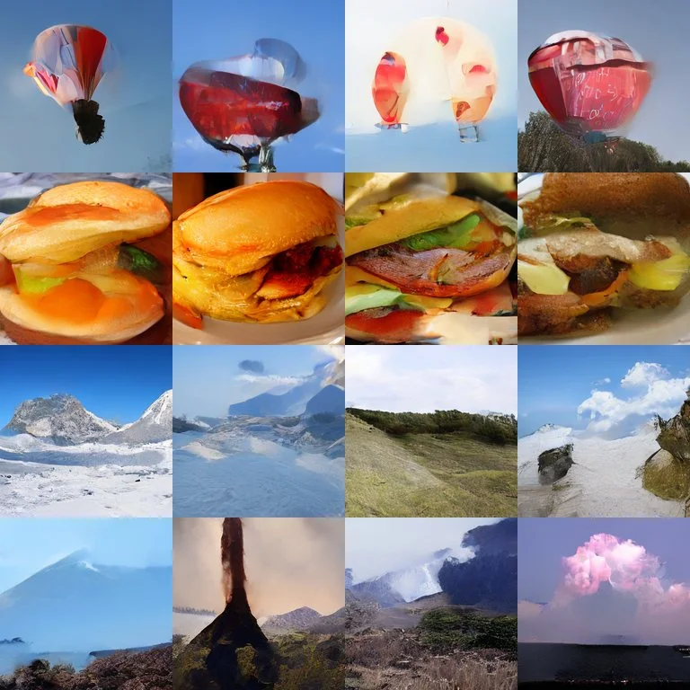
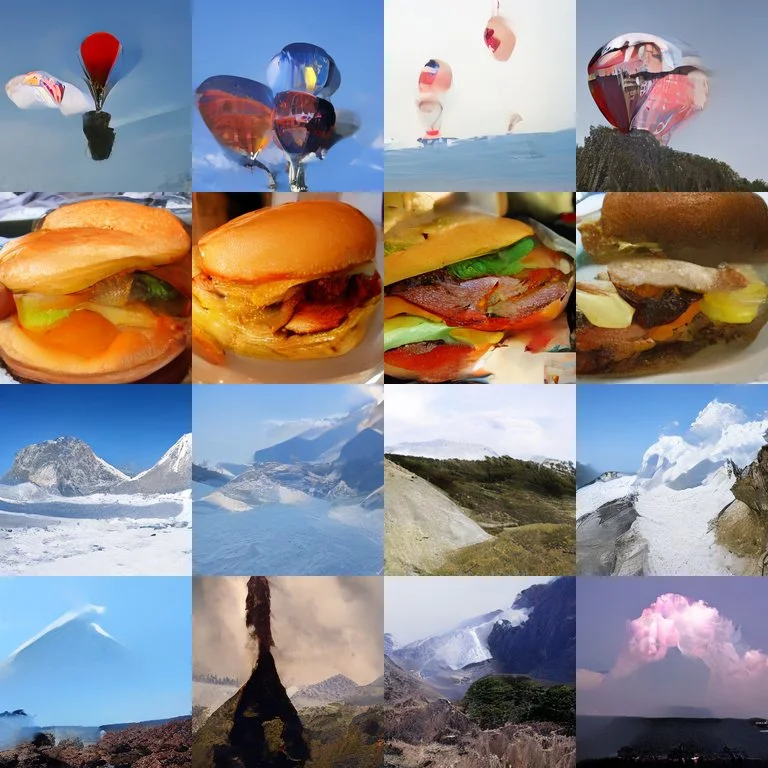
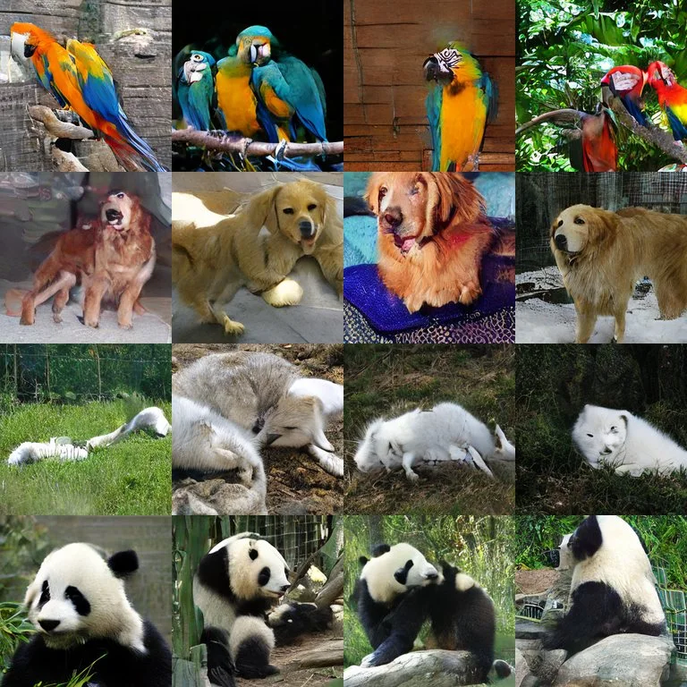

<!-- TODO: co-authors (add them to the authors list and the bibtex) -->
<style>
    :root { --accent: var(--acc); }
    .fe-short { display: none; }
    @media (max-width: 767px) { .fe-desk { display: none; } }
    /* Amber is iFeCo (student block, teacher's cleaner view, loss), slate the baseline and the flow-map loss, violet REPA. */
    :root { --dim: 0.1; --acc: #c2410c; --acc-f: #fff1e6; --acc-s: #ffedd5; --sl: #475569; --sl-f: #f1f5f9; --rep: #7c3aed; --rep-f: #f5f3ff; --ls: #e11d48; --grid: #ececef; }
    @media (prefers-color-scheme: dark) {
        :root { --dim: 0.14; --acc: #fb923c; --acc-f: rgba(251, 146, 60, 0.14); --acc-s: rgba(251, 146, 60, 0.24); --sl: #94a3b8; --sl-f: rgba(148, 163, 184, 0.14); --rep: #a78bfa; --rep-f: rgba(167, 139, 250, 0.14); --ls: #fb7185; --grid: #222225; }
    }
    .fe-fig { margin-block: 0 48px; }
    .fe-fig > figcaption, main .caption { margin: 0; }
    main h2 { margin-bottom: 12px; }
    #results .table-wrap { margin-top: 8px; }
    #results .table-wrap + .caption { margin-bottom: 32px; }
    .fe-media { margin-bottom: 16px; }
    .fs { display: block; width: 100%; height: auto; }
    .fs text { font-family: var(--font); font-size: 15px; fill: var(--text); }
    .fs .lb, .fs .tick { font-size: 13px; fill: var(--muted); }
    .fs .strong { fill: var(--text); font-weight: 600; }
    .fs .acc { fill: var(--acc); }
    .fs .it { font-style: italic; }
    .fs .sub { font-size: 10px; baseline-shift: sub; }
    .fs .hd-txt { fill: var(--text); } .fs .hd-mut { fill: var(--muted); } .fs .hd-acc { fill: var(--acc); }
    .fs .traj { stroke: var(--muted); stroke-width: 2; opacity: 0.6; }
    .fs .lead { stroke: var(--border); stroke-width: 1; }
    .fs .dot { fill: var(--text); }
    .fs .ring { fill: var(--acc-s); stroke: var(--acc); stroke-width: 2.5; }
    .fs .land { fill: var(--muted); }
    .fs .jump { fill: none; stroke: var(--text); stroke-width: 2.5; }
    .fs .jump.dash { stroke: var(--muted); stroke-width: 1.8; stroke-dasharray: 6 5; }
    .fs .arr { fill: none; stroke: var(--acc); stroke-width: 2; }
    .fs .ln { fill: none; stroke-width: 2; } .fs .ln.mut { stroke: var(--muted); } .fs .ln.acc { stroke: var(--acc); } .fs .ln.dash { stroke-dasharray: 5 4; }
    .fs .blk { fill: var(--surface); stroke: var(--border); stroke-width: 1; }
    .fs .blk.acc { fill: var(--acc); stroke: var(--acc); } .fs .blk.acc-o { fill: var(--acc-f); stroke: var(--acc); stroke-width: 2; }
    .fs .bx { stroke-width: 1.5; } .fs .bx.sl { fill: var(--sl-f); stroke: var(--sl); } .fs .bx.acc-f { fill: var(--acc-f); stroke: var(--acc); }
    .fs .bt { font-weight: 600; }
    .fs text.rep, .fs .hd-rep { fill: var(--rep); } .fs .ln.rep { stroke: var(--rep); } .fs .blk.rep { fill: var(--rep); stroke: var(--rep); } .fs .bx.rep-f { fill: var(--rep-f); stroke: var(--rep); }
    .fe-concept { max-width: 640px; margin-left: auto; margin-right: auto; }
    /* Method figure buttons: parts outside the chosen loss dim; without JS everything stays lit. */
    .method .u { transition: opacity 0.2s; }
    @media (prefers-reduced-motion: reduce) { .method .u { transition: none; } }
    .fe-btnfig[data-task="flow"] .u:not(.on-flow), .fe-btnfig[data-task="cons"] .u:not(.on-cons) { opacity: var(--dim); }
    .fe-task-text { min-height: 3em; }
    /* Curves: log FID against training steps. Hover a point for its value. */
    .curve .ttl { font-weight: 600; }
    .curve .grid { stroke: var(--grid); } .curve .axis { stroke: var(--muted); } .curve .ax { font-size: 12px; fill: var(--muted); }
    .curve .ln { fill: none; stroke-width: 2.2; stroke-linejoin: round; } .curve .ln.base { stroke: var(--sl); } .curve .ln.ours { stroke: var(--acc); } .curve .ln.repa { stroke: var(--rep); } .curve .ln.all { stroke: var(--acc); stroke-dasharray: 5 3.5; } table.res { font-size: 15px; } table.res td.oc, table.res th.oc { background: var(--acc-f); } table.res thead th.oc { color: var(--acc); } table.res tr.sup th { border-bottom: 0; padding-bottom: 0; font-size: 12px; font-weight: 500; color: var(--muted); } table.res tr.sup th.span { text-align: center; position: relative; } table.res tr.sup th.span::after { content: ""; position: absolute; left: 10px; right: 10px; bottom: 0; border-bottom: 1.5px solid var(--muted); opacity: 0.6; } table.res .st { color: var(--muted); font-size: 13px; margin-left: 4px; } table.res .na { color: var(--muted); opacity: 0.5; } table.res tbody th[colspan] a { color: inherit; } table.res td, table.res th { padding-inline: 12px; } table.res td:first-child, table.res th:first-child { padding-left: 0; } .bars-sp .grid { stroke: var(--grid); } .bars-sp .axis-b { stroke: var(--muted); } .bars-sp .b-ours { fill: var(--acc); } .bars-sp .b-all { fill: var(--acc); opacity: 0.55; } .bars-sp .b-rep { fill: var(--rep); } .bars-sp .b-lsync { fill: var(--ls); } .bars-sp .t-ours, .bars-sp .t-all { fill: var(--acc); } .bars-sp .t-rep { fill: var(--rep); } .bars-sp .t-lsync { fill: var(--ls); } .bars-sp .tick { font-size: 12px; } .curve .ln.lsync { stroke: var(--ls); stroke-width: 1.6; }
    .curve .pt { fill: transparent; } .curve .pt-g:hover .pt { fill: var(--text); r: 4; }
    .curve .spd { font-size: 14px; font-weight: 600; fill: var(--acc); } .probe .band { fill: var(--acc-f); } .probe .dot-base { fill: var(--sl); } .probe .dot-ours { fill: var(--acc); } .probe .dot-repa { fill: var(--rep); } .probe .ln.repa { stroke-width: 1.6; }
    .curve .end { font-size: 13px; font-weight: 600; } .curve .end.base { fill: var(--sl); } .curve .end.ours { fill: var(--acc); }
    .fe-teaser { display: grid; grid-template-columns: 560fr 340fr; gap: 24px; align-items: end; }
    .fs .ttl .sz { font-weight: 400; fill: var(--muted); }
    .fe-key { padding-left: calc((100% - 24px) / 3 * 46 / 300 + 10px); display: flex; flex-wrap: wrap; justify-content: flex-start; gap: 4px 18px; margin-block: 0 8px; color: var(--muted); font-size: var(--text-secondary); }
    .fe-key span { display: inline-flex; align-items: center; gap: 6px; }
    .fe-key i { display: inline-block; width: 18px; height: 0; border-top: 2.5px solid var(--sl); }
    .fe-key .k-ours { border-color: var(--acc); } .fe-key .k-repa { border-color: var(--rep); } .fe-key .k-all { border-color: var(--acc); border-top-style: dashed; } .fe-key .k-ls { border-color: var(--ls); }
    .fe-curves { display: grid; grid-template-columns: repeat(3, 1fr); gap: 8px 12px; }
    /* Why it is free: three families side by side, one at a time on phones. */
    .fe-panels { display: grid; grid-template-columns: repeat(3, 1fr); }
    .fd text { font-family: var(--font); font-size: 15px; fill: var(--text); }
    .fd .mut { fill: var(--muted); } .fd .small { font-size: 13px; } .fd .b { font-weight: 600; } .fd .acc { fill: var(--acc); }
    .fd .arc { fill: none; stroke: var(--text); stroke-width: 2.5; }
    .fd .arc-d { fill: none; stroke: var(--muted); stroke-width: 2; stroke-dasharray: 6 5; }
    .fd .ar-acc-d { fill: none; stroke: var(--acc); stroke-width: 2; stroke-dasharray: 5 4; }
    .fd .hd-text { fill: var(--text); } .fd .hd-mut { fill: var(--muted); } .fd .hd-acc { fill: var(--acc); }
    .fd .traj { fill: none; stroke: var(--muted); stroke-width: 1; stroke-dasharray: 1.5 4; opacity: 0.8; }
    .fd .main { fill: none; stroke: var(--muted); stroke-width: 2; }
    .fd .dens { fill: var(--surface); stroke: var(--muted); stroke-width: 1.5; }
    .fd .dot { fill: var(--text); } .fd .pt { fill: var(--muted); }
    .fd .cv { fill: var(--acc-s); stroke: var(--acc); stroke-width: 2.5; }
    /* Samples: baseline and iFeCo side by side, same classes and noise; one family at a time. */
    .fe-pair { display: grid; grid-template-columns: 1fr 1fr; gap: 24px; }
    .fe-pair figure { margin: 0; }
    .fe-pair figcaption { margin-block: 0 8px; text-align: center; font-size: var(--text-secondary); font-weight: 600; color: var(--sl); }
    .fe-pair figcaption.ours { color: var(--acc); }
    .fe-pair img { display: block; width: 100%; height: auto; }
    #fe-samples[data-on="shortcut"] .set-meanflow, #fe-samples[data-on="meanflow"] .set-shortcut { display: none; }
    @media (min-width: 768px) { .fe-panels[data-on] > svg, .fe-curves[data-on] > svg { display: block; } }
    @media (max-width: 767px) {
        .fe-teaser { grid-template-columns: 1fr; max-width: 480px; margin: 0 auto; gap: 16px; }
        .curve.teaser text { font-size: 17px; } .curve.teaser .tick { font-size: 15px; } .curve.teaser .end { font-size: 13px; } .curve.teaser .spd { font-size: 16px; }
        .fe-panels, .fe-curves { grid-template-columns: 1fr; max-width: 400px; margin: 0 auto; }
        .fe-key { max-width: 400px; margin-left: auto; margin-right: auto; padding-left: calc(min(100%, 400px) * 46 / 300); }
        .fe-panels[data-on="0"] > svg:not(:nth-child(1)), .fe-panels[data-on="1"] > svg:not(:nth-child(2)), .fe-panels[data-on="2"] > svg:not(:nth-child(3)),
        .fe-curves[data-on="0"] > svg:not(.fam-0), .fe-curves[data-on="1"] > svg:not(.fam-1), .fe-curves[data-on="2"] > svg:not(.fam-2) { display: none; }
        .fe-pair { gap: 12px; }
        .fe-long { display: none; }
        .fe-btns { flex-wrap: nowrap; }
        .fe-short { display: inline; }
    }
</style>

<section id="teaser" class="wide">
    <figure class="fe-fig">
        <div class="fe-media fe-teaser">
            <div class="only-desk"><svg class="fs contrast" viewBox="0 0 600 266" role="img" aria-labelledby="cx-t">
<title id="cx-t">Where the alignment target comes from. Top, REPA: the student's early features of a noisy view are aligned with a frozen DINOv2 encoder that reads the clean image, in an extra forward pass. Bottom, iFeCo: the same early features are aligned with the model's own deep features at a cleaner view, which the flow-map training step already computes.</title>
<defs><marker id="cx-mut" viewBox="0 0 10 10" refX="8" refY="5" markerUnits="userSpaceOnUse" markerWidth="10" markerHeight="10" orient="auto"><path class="hd-mut" d="M0,0 L10,5 L0,10 z"/></marker><marker id="cx-acc" viewBox="0 0 10 10" refX="8" refY="5" markerUnits="userSpaceOnUse" markerWidth="10" markerHeight="10" orient="auto"><path class="hd-acc" d="M0,0 L10,5 L0,10 z"/></marker><marker id="cx-rep" viewBox="0 0 10 10" refX="8" refY="5" markerUnits="userSpaceOnUse" markerWidth="10" markerHeight="10" orient="auto"><path class="hd-rep" d="M0,0 L10,5 L0,10 z"/></marker></defs>
<text class="strong rep" x="0" y="18">REPA</text>
<image href="view_noisier.webp" x="0" y="48.0" width="48" height="48"/>
<text class="lb" x="0" y="110">noisy view</text>
<line class="ln mut" x1="51" y1="72.0" x2="69" y2="72.0" marker-end="url(#cx-mut)"/>
<rect class="blk" x="72" y="52" width="14" height="40" rx="3"/>
<rect class="blk rep" x="92" y="52" width="14" height="40" rx="3"/>
<rect class="blk" x="112" y="52" width="14" height="40" rx="3"/>
<rect class="blk" x="132" y="52" width="14" height="40" rx="3"/>
<rect class="blk" x="152" y="52" width="14" height="40" rx="3"/>
<rect class="blk" x="172" y="52" width="14" height="40" rx="3"/>
<text class="lb" x="129.0" y="110" text-anchor="middle">student</text>
<image href="view_image.webp" x="552" y="48.0" width="48" height="48"/>
<text class="lb" x="600" y="110" text-anchor="end">clean image</text>
<line class="ln mut" x1="549" y1="72.0" x2="531" y2="72.0" marker-end="url(#cx-mut)"/>
<rect class="bx rep-f" x="408" y="52" width="120" height="40" rx="4"/>
<text class="bt" x="468.0" y="77.0" text-anchor="middle">DINOv2</text>
<path class="ln rep" d="M99.0,50 V30 H468.0 V49" marker-end="url(#cx-rep)"/>
<text class="lb rep" x="283.5" y="24" text-anchor="middle">aligns with</text>
<text class="lb rep" x="300.0" y="130" text-anchor="middle" style="font-size:13px">frozen pretrained encoder, extra forward pass</text>
<text class="strong acc" x="0" y="146">iFeCo</text>
<image href="view_noisier.webp" x="0" y="176.0" width="48" height="48"/>
<text class="lb" x="0" y="238">noisier view</text>
<line class="ln mut" x1="51" y1="200.0" x2="69" y2="200.0" marker-end="url(#cx-mut)"/>
<rect class="blk" x="72" y="180" width="14" height="40" rx="3"/>
<rect class="blk acc" x="92" y="180" width="14" height="40" rx="3"/>
<rect class="blk" x="112" y="180" width="14" height="40" rx="3"/>
<rect class="blk" x="132" y="180" width="14" height="40" rx="3"/>
<rect class="blk" x="152" y="180" width="14" height="40" rx="3"/>
<rect class="blk" x="172" y="180" width="14" height="40" rx="3"/>
<text class="lb" x="129.0" y="238" text-anchor="middle">student</text>
<image href="view_cleaner.webp" x="552" y="176.0" width="48" height="48"/>
<text class="lb" x="600" y="238" text-anchor="end">cleaner view</text>
<line class="ln mut" x1="549" y1="200.0" x2="531" y2="200.0" marker-end="url(#cx-mut)"/>
<rect class="blk" x="414" y="180" width="14" height="40" rx="3"/>
<rect class="blk" x="434" y="180" width="14" height="40" rx="3"/>
<rect class="blk" x="454" y="180" width="14" height="40" rx="3"/>
<rect class="blk" x="474" y="180" width="14" height="40" rx="3"/>
<rect class="blk acc-o" x="494" y="180" width="14" height="40" rx="3"/>
<rect class="blk" x="514" y="180" width="14" height="40" rx="3"/>
<text class="lb" x="471.0" y="238" text-anchor="middle">same model</text>
<path class="ln acc" d="M99.0,178 V158 H501.0 V177" marker-end="url(#cx-acc)"/>
<text class="lb acc" x="300.0" y="152" text-anchor="middle">aligns with</text>
<text class="lb acc" x="300.0" y="258" text-anchor="middle" style="font-size:13px">already computed by the training step: no encoder, no extra pass</text>
</svg></div>
            <div class="only-phone"><svg class="fs contrast" viewBox="0 0 440 266" role="img" aria-labelledby="cxp-t">
<title id="cxp-t">Where the alignment target comes from. Top, REPA: the student's early features of a noisy view are aligned with a frozen DINOv2 encoder that reads the clean image, in an extra forward pass. Bottom, iFeCo: the same early features are aligned with the model's own deep features at a cleaner view, which the flow-map training step already computes.</title>
<defs><marker id="cxp-mut" viewBox="0 0 10 10" refX="8" refY="5" markerUnits="userSpaceOnUse" markerWidth="10" markerHeight="10" orient="auto"><path class="hd-mut" d="M0,0 L10,5 L0,10 z"/></marker><marker id="cxp-acc" viewBox="0 0 10 10" refX="8" refY="5" markerUnits="userSpaceOnUse" markerWidth="10" markerHeight="10" orient="auto"><path class="hd-acc" d="M0,0 L10,5 L0,10 z"/></marker><marker id="cxp-rep" viewBox="0 0 10 10" refX="8" refY="5" markerUnits="userSpaceOnUse" markerWidth="10" markerHeight="10" orient="auto"><path class="hd-rep" d="M0,0 L10,5 L0,10 z"/></marker></defs>
<text class="strong rep" x="0" y="18">REPA</text>
<image href="view_noisier.webp" x="0" y="52.0" width="40" height="40"/>
<text class="lb" x="0" y="110">noisy view</text>
<line class="ln mut" x1="43" y1="72.0" x2="61" y2="72.0" marker-end="url(#cxp-mut)"/>
<rect class="blk" x="64" y="52" width="11" height="40" rx="3"/>
<rect class="blk rep" x="79" y="52" width="11" height="40" rx="3"/>
<rect class="blk" x="94" y="52" width="11" height="40" rx="3"/>
<rect class="blk" x="109" y="52" width="11" height="40" rx="3"/>
<rect class="blk" x="124" y="52" width="11" height="40" rx="3"/>
<rect class="blk" x="139" y="52" width="11" height="40" rx="3"/>
<text class="lb" x="107.0" y="110" text-anchor="middle">student</text>
<image href="view_image.webp" x="400" y="52.0" width="40" height="40"/>
<text class="lb" x="440" y="110" text-anchor="end">clean image</text>
<line class="ln mut" x1="397" y1="72.0" x2="359" y2="72.0" marker-end="url(#cxp-mut)"/>
<rect class="bx rep-f" x="264" y="52" width="92" height="40" rx="4"/>
<text class="bt" x="310.0" y="77.0" text-anchor="middle">DINOv2</text>
<path class="ln rep" d="M84.5,50 V30 H310.0 V49" marker-end="url(#cxp-rep)"/>
<text class="lb rep" x="197.25" y="24" text-anchor="middle">aligns with</text>
<text class="lb rep" x="220.0" y="130" text-anchor="middle" style="font-size:12px">frozen pretrained encoder, extra forward pass</text>
<text class="strong acc" x="0" y="146">iFeCo</text>
<image href="view_noisier.webp" x="0" y="180.0" width="40" height="40"/>
<text class="lb" x="0" y="238">noisier view</text>
<line class="ln mut" x1="43" y1="200.0" x2="61" y2="200.0" marker-end="url(#cxp-mut)"/>
<rect class="blk" x="64" y="180" width="11" height="40" rx="3"/>
<rect class="blk acc" x="79" y="180" width="11" height="40" rx="3"/>
<rect class="blk" x="94" y="180" width="11" height="40" rx="3"/>
<rect class="blk" x="109" y="180" width="11" height="40" rx="3"/>
<rect class="blk" x="124" y="180" width="11" height="40" rx="3"/>
<rect class="blk" x="139" y="180" width="11" height="40" rx="3"/>
<text class="lb" x="107.0" y="238" text-anchor="middle">student</text>
<image href="view_cleaner.webp" x="400" y="180.0" width="40" height="40"/>
<text class="lb" x="440" y="238" text-anchor="end">cleaner view</text>
<line class="ln mut" x1="397" y1="200.0" x2="359" y2="200.0" marker-end="url(#cxp-mut)"/>
<rect class="blk" x="270" y="180" width="11" height="40" rx="3"/>
<rect class="blk" x="285" y="180" width="11" height="40" rx="3"/>
<rect class="blk" x="300" y="180" width="11" height="40" rx="3"/>
<rect class="blk" x="315" y="180" width="11" height="40" rx="3"/>
<rect class="blk acc-o" x="330" y="180" width="11" height="40" rx="3"/>
<rect class="blk" x="345" y="180" width="11" height="40" rx="3"/>
<text class="lb" x="313.0" y="238" text-anchor="middle">same model</text>
<path class="ln acc" d="M84.5,178 V158 H335.5 V177" marker-end="url(#cxp-acc)"/>
<text class="lb acc" x="210.0" y="152" text-anchor="middle">aligns with</text>
<text class="lb acc" x="220.0" y="258" text-anchor="middle" style="font-size:12px">already computed by the training step: no encoder, no extra pass</text>
</svg></div>
            <svg class="fs curve teaser" viewBox="0 0 340 236" role="img" aria-label="Shortcut DiT-B/2, 1 step, 1-step FID over training steps. Vanilla ends at 37.0 after 1200k steps; iFeCo ends at 28.0 after 1200k steps."><defs><marker id="tcv-acc" viewBox="0 0 10 10" refX="8" refY="5" markerUnits="userSpaceOnUse" markerWidth="10" markerHeight="10" orient="auto"><path class="hd-acc" d="M0,0 L10,5 L0,10 z"/></marker></defs><text class="ttl" x="46" y="18" text-anchor="start">Shortcut DiT-B/2, 1 step</text>
<line class="grid" x1="46" y1="181.2" x2="276" y2="181.2"/>
<text class="tick" x="40" y="185.2" text-anchor="end">30</text>
<line class="grid" x1="46" y1="139.4" x2="276" y2="139.4"/>
<text class="tick" x="40" y="143.4" text-anchor="end">40</text>
<line class="grid" x1="46" y1="80.6" x2="276" y2="80.6"/>
<text class="tick" x="40" y="84.6" text-anchor="end">60</text>
<line class="grid" x1="46" y1="38.8" x2="276" y2="38.8"/>
<text class="tick" x="40" y="42.8" text-anchor="end">80</text>
<line class="grid" x1="46.0" y1="30" x2="46.0" y2="202"/>
<text class="tick" x="46.0" y="218" text-anchor="middle">0</text>
<line class="grid" x1="119.6" y1="30" x2="119.6" y2="202"/>
<text class="tick" x="119.6" y="218" text-anchor="middle">400k</text>
<line class="grid" x1="193.2" y1="30" x2="193.2" y2="202"/>
<text class="tick" x="193.2" y="218" text-anchor="middle">800k</text>
<line class="grid" x1="266.8" y1="30" x2="266.8" y2="202"/>
<text class="tick" x="266.8" y="218" text-anchor="middle">1.2M</text>
<line class="axis" x1="46" y1="202" x2="276" y2="202"/>
<line class="axis" x1="46" y1="30" x2="46" y2="202"/>
<text class="ax" transform="translate(13 116.0) rotate(-90)" text-anchor="middle">1-step FID</text>
<polyline class="ln base" points="64.4,38.2 82.8,78.5 101.2,102.0 119.6,113.7 138.0,121.8 156.4,128.3 174.8,134.3 193.3,140.1 211.6,140.8 230.0,146.9 248.4,150.3 266.8,151.0"/>
<g class="pt-g"><title>Vanilla, 100k steps: FID 80.35</title><circle class="pt base" cx="64.4" cy="38.2" r="7"/></g>
<g class="pt-g"><title>Vanilla, 200k steps: FID 60.88</title><circle class="pt base" cx="82.8" cy="78.5" r="7"/></g>
<g class="pt-g"><title>Vanilla, 300k steps: FID 51.78</title><circle class="pt base" cx="101.2" cy="102.0" r="7"/></g>
<g class="pt-g"><title>Vanilla, 400k steps: FID 47.75</title><circle class="pt base" cx="119.6" cy="113.7" r="7"/></g>
<g class="pt-g"><title>Vanilla, 500k steps: FID 45.16</title><circle class="pt base" cx="138.0" cy="121.8" r="7"/></g>
<g class="pt-g"><title>Vanilla, 600k steps: FID 43.20</title><circle class="pt base" cx="156.4" cy="128.3" r="7"/></g>
<g class="pt-g"><title>Vanilla, 700k steps: FID 41.44</title><circle class="pt base" cx="174.8" cy="134.3" r="7"/></g>
<g class="pt-g"><title>Vanilla, 801k steps: FID 39.83</title><circle class="pt base" cx="193.3" cy="140.1" r="7"/></g>
<g class="pt-g"><title>Vanilla, 900k steps: FID 39.62</title><circle class="pt base" cx="211.6" cy="140.8" r="7"/></g>
<g class="pt-g"><title>Vanilla, 1000k steps: FID 37.99</title><circle class="pt base" cx="230.0" cy="146.9" r="7"/></g>
<g class="pt-g"><title>Vanilla, 1100k steps: FID 37.11</title><circle class="pt base" cx="248.4" cy="150.3" r="7"/></g>
<g class="pt-g"><title>Vanilla, 1200k steps: FID 36.95</title><circle class="pt base" cx="266.8" cy="151.0" r="7"/></g>
<polyline class="ln ours" points="64.4,59.9 82.8,110.3 101.2,137.2 119.6,149.5 138.0,163.3 156.4,169.0 174.8,176.8 193.2,182.4 211.6,186.4 230.0,189.8 248.4,191.7 266.8,191.1"/>
<g class="pt-g"><title>iFeCo, 100k steps: FID 69.15</title><circle class="pt ours" cx="64.4" cy="59.9" r="7"/></g>
<g class="pt-g"><title>iFeCo, 200k steps: FID 48.86</title><circle class="pt ours" cx="82.8" cy="110.3" r="7"/></g>
<g class="pt-g"><title>iFeCo, 300k steps: FID 40.61</title><circle class="pt ours" cx="101.2" cy="137.2" r="7"/></g>
<g class="pt-g"><title>iFeCo, 400k steps: FID 37.32</title><circle class="pt ours" cx="119.6" cy="149.5" r="7"/></g>
<g class="pt-g"><title>iFeCo, 500k steps: FID 33.93</title><circle class="pt ours" cx="138.0" cy="163.3" r="7"/></g>
<g class="pt-g"><title>iFeCo, 600k steps: FID 32.63</title><circle class="pt ours" cx="156.4" cy="169.0" r="7"/></g>
<g class="pt-g"><title>iFeCo, 700k steps: FID 30.93</title><circle class="pt ours" cx="174.8" cy="176.8" r="7"/></g>
<g class="pt-g"><title>iFeCo, 800k steps: FID 29.75</title><circle class="pt ours" cx="193.2" cy="182.4" r="7"/></g>
<g class="pt-g"><title>iFeCo, 900k steps: FID 28.95</title><circle class="pt ours" cx="211.6" cy="186.4" r="7"/></g>
<g class="pt-g"><title>iFeCo, 1000k steps: FID 28.27</title><circle class="pt ours" cx="230.0" cy="189.8" r="7"/></g>
<g class="pt-g"><title>iFeCo, 1100k steps: FID 27.90</title><circle class="pt ours" cx="248.4" cy="191.7" r="7"/></g>
<g class="pt-g"><title>iFeCo, 1200k steps: FID 28.03</title><circle class="pt ours" cx="266.8" cy="191.1" r="7"/></g>
<line class="arr" x1="262.8" y1="151.0" x2="129.5" y2="151.0" marker-end="url(#tcv-acc)"/>
<text class="spd" x="274" y="46" text-anchor="end">2.9&times; fewer steps</text>
<text class="end base" x="272.8" y="155.0">Vanilla</text>
<text class="end ours" x="272.8" y="195.1">iFeCo</text></svg>
        </div>
        <figcaption>REPA takes its alignment target from a frozen pretrained encoder, while iFeCo takes it from the model's own features at a cleaner view, which the flow-map training step already computes. Right: 1-step FID over training on ImageNet 256&times;256; the arrow is the training saved to reach the vanilla model's final FID.</figcaption>
    </figure>
</section>

<section id="tldr">
    <p class="tldr"><strong>TL;DR:</strong> iFeCo turns the cleaner view already used in flow-map training into a target for representation learning. The model learns to predict those cleaner features from a noisier view. This gives few-step generators a way to learn better features as they train, without a pretrained encoder or an extra forward pass.</p>
</section>

<section id="context" class="intro">
    <p>Generative models train faster when their internal features are good. <a href="https://arxiv.org/abs/2410.06940">Representation alignment</a> (REPA) uses this directly: it trains the early features of a diffusion model to match those of DINOv2, a pretrained self-supervised image encoder, and reports training more than 17 times faster. Related work points the same way, from <a href="https://arxiv.org/abs/2510.11690">representation autoencoders</a>, which generate in the feature space of such an encoder, to <a href="https://arxiv.org/abs/2312.03701">representation generation</a>, which first samples encoder features and then the image. All of them borrow features from an external encoder. That encoder needs its own pretraining and an extra pass over the training data, and the generator does not learn the features itself.</p>
    <p>Since I was mostly working on few-step models (flow maps, which generate an image in one or a few jumps along the path from noise to image), I noticed that their training is, in principle, a form of <a href="https://arxiv.org/abs/2505.18825">self-distillation</a>: the model, or its EMA copy (a slowly updated average of its weights), teaches itself. Its own evaluation at a cleaner view of the image builds the target for its jump from a noisier view. Because the model already distills from itself in output space, its features at the cleaner view give a self-distillation target in feature space, as DINOv2's features do for REPA. The training step already computes them, so using them needs no extra forward pass. That is the free lunch for flow map training.</p>
</section>

<section id="samples" class="wide">
    <h2>One-step samples</h2>
    <figure class="fe-fig" id="fe-samples" data-on="shortcut">
        <div class="tabs fe-tabs" role="group" aria-label="Flow-map family" hidden>
            <button type="button" class="btn" data-on="shortcut" aria-pressed="true">Shortcut<span class="fe-long"> DiT-B/2</span></button>
            <button type="button" class="btn" data-on="meanflow" aria-pressed="false">MeanFlow<span class="fe-long"> SiT-B/2</span></button>
        </div>
        <div class="fe-media fe-pair set-shortcut">
            <figure><figcaption>Vanilla</figcaption></figure>
            <figure><figcaption class="ours">iFeCo</figcaption></figure>
        </div>
        <div class="fe-media fe-pair set-meanflow">
            <figure><figcaption>Vanilla</figcaption></figure>
            <figure><figcaption class="ours">iFeCo</figcaption></figure>
        </div>
        <figcaption>ImageNet 256&times;256, one sampling step, 1.2M training steps, uncurated. Each row is one class; both grids share classes and noise, so the pictures differ only by the loss.</figcaption>
    </figure>
</section>

<section id="free" class="wide">
    <h2>Feature targets from the existing training step</h2>
    <figure class="fe-fig">
        <div class="fe-media fe-concept">
            <div class="only-desk"><svg class="fs concept" viewBox="0 0 560 250" role="img" aria-labelledby="tc-t">
<title id="tc-t">A trajectory from noise to an image. The student makes one long jump from the noisier view; two shorter jumps through the cleaner view land at the same point. Below, the student at the noisier view and the teacher at the cleaner view; the consistency loss makes the student's early features predict the teacher's deep features.</title>
<defs><marker id="ah-txt" viewBox="0 0 10 10" refX="8" refY="5" markerUnits="userSpaceOnUse" markerWidth="10" markerHeight="10" orient="auto"><path class="hd-txt" d="M0,0 L10,5 L0,10 z"/></marker><marker id="ah-mut" viewBox="0 0 10 10" refX="8" refY="5" markerUnits="userSpaceOnUse" markerWidth="10" markerHeight="10" orient="auto"><path class="hd-mut" d="M0,0 L10,5 L0,10 z"/></marker><marker id="ah-acc" viewBox="0 0 10 10" refX="8" refY="5" markerUnits="userSpaceOnUse" markerWidth="10" markerHeight="10" orient="auto"><path class="hd-acc" d="M0,0 L10,5 L0,10 z"/></marker></defs>
<line class="traj" x1="64" y1="70" x2="496" y2="70"/>
<image href="view_noise.webp" x="12" y="46.0" width="48" height="48"/><text class="lb" x="36.0" y="110.0" text-anchor="middle">noise</text>
<image href="view_image.webp" x="500" y="46.0" width="48" height="48"/><text class="lb" x="524.0" y="110.0" text-anchor="middle">image</text>
<path class="jump" d="M177,65 Q300.0,-34 424,65" marker-end="url(#ah-txt)"/>
<text class="lb strong" x="300.0" y="14" text-anchor="middle">student jump</text>
<path class="jump dash" d="M177,64 Q255.0,22 331,63" marker-end="url(#ah-mut)"/>
<path class="jump dash" d="M349,63 Q385.0,30 424,65" marker-end="url(#ah-mut)"/>
<text class="lb" x="259.0" y="96" text-anchor="middle">two shorter jumps</text>
<circle class="land" cx="430" cy="70" r="4"/>
<circle class="ring" cx="340" cy="70" r="8"/>
<circle class="dot" cx="170" cy="70" r="6"/>
<line class="lead" x1="170" y1="79" x2="170" y2="102"/>
<image href="view_noisier.webp" x="146.0" y="104" width="48" height="48"/>
<text class="lb" x="170" y="168" text-anchor="middle">noisier view, <tspan class='it'>t</tspan><tspan class='sub'>2</tspan></text>
<text class="strong" x="170" y="188" text-anchor="middle">student</text>
<line class="lead" x1="340" y1="79" x2="340" y2="102"/>
<image href="view_cleaner.webp" x="316.0" y="104" width="48" height="48"/>
<text class="lb" x="340" y="168" text-anchor="middle">cleaner view, <tspan class='it'>t</tspan><tspan class='sub'>1</tspan></text>
<text class="strong acc" x="340" y="188" text-anchor="middle">teacher</text>
<line class="arr" x1="180" y1="214" x2="326" y2="214" marker-end="url(#ah-acc)"/>
<text class="lb acc" x="255.0" y="206" text-anchor="middle">early features predict deep features</text>
<text class="lb" x="255.0" y="234" text-anchor="middle">consistency loss, no extra pass</text>
</svg></div>
            <div class="only-phone"><svg class="fs concept concept--phone" viewBox="0 0 400 256" role="img" aria-labelledby="tcp-t">
<title id="tcp-t">A trajectory from noise to an image. The student makes one long jump from the noisier view; two shorter jumps through the cleaner view land at the same point. Below, the student at the noisier view and the teacher at the cleaner view; the consistency loss makes the student's early features predict the teacher's deep features.</title>
<defs><marker id="ahp-txt" viewBox="0 0 10 10" refX="8" refY="5" markerUnits="userSpaceOnUse" markerWidth="10" markerHeight="10" orient="auto"><path class="hd-txt" d="M0,0 L10,5 L0,10 z"/></marker><marker id="ahp-mut" viewBox="0 0 10 10" refX="8" refY="5" markerUnits="userSpaceOnUse" markerWidth="10" markerHeight="10" orient="auto"><path class="hd-mut" d="M0,0 L10,5 L0,10 z"/></marker><marker id="ahp-acc" viewBox="0 0 10 10" refX="8" refY="5" markerUnits="userSpaceOnUse" markerWidth="10" markerHeight="10" orient="auto"><path class="hd-acc" d="M0,0 L10,5 L0,10 z"/></marker></defs>
<line class="traj" x1="48" y1="60" x2="352" y2="60"/>
<image href="view_noise.webp" x="4" y="40.0" width="40" height="40"/><text class="lb" x="24.0" y="96.0" text-anchor="middle">noise</text>
<image href="view_image.webp" x="356" y="40.0" width="40" height="40"/><text class="lb" x="376.0" y="96.0" text-anchor="middle">image</text>
<path class="jump" d="M137,55 Q215.0,-16 294,55" marker-end="url(#ahp-txt)"/>
<text class="lb strong" x="215.0" y="14" text-anchor="middle">student jump</text>
<path class="jump dash" d="M137,54 Q185.0,26 231,53" marker-end="url(#ahp-mut)"/>
<path class="jump dash" d="M249,53 Q270.0,32 294,55" marker-end="url(#ahp-mut)"/>
<text class="lb" x="189.0" y="86" text-anchor="middle">two shorter jumps</text>
<circle class="land" cx="300" cy="60" r="4"/>
<circle class="ring" cx="240" cy="60" r="8"/>
<circle class="dot" cx="130" cy="60" r="6"/>
<line class="lead" x1="130" y1="69" x2="130" y2="92"/>
<image href="view_noisier.webp" x="110.0" y="94" width="40" height="40"/>
<text class="lb" x="130" y="150" text-anchor="middle">noisier view, <tspan class='it'>t</tspan><tspan class='sub'>2</tspan></text>
<text class="strong" x="130" y="170" text-anchor="middle">student</text>
<line class="lead" x1="240" y1="69" x2="240" y2="92"/>
<image href="view_cleaner.webp" x="220.0" y="94" width="40" height="40"/>
<text class="lb" x="240" y="150" text-anchor="middle">cleaner view, <tspan class='it'>t</tspan><tspan class='sub'>1</tspan></text>
<text class="strong acc" x="240" y="170" text-anchor="middle">teacher</text>
<line class="arr" x1="140" y1="196" x2="226" y2="196" marker-end="url(#ahp-acc)"/>
<text class="lb acc" x="185.0" y="188" text-anchor="middle">early features predict deep features</text>
<text class="lb" x="185.0" y="216" text-anchor="middle">consistency loss, no extra pass</text>
</svg></div>
        </div>
        <figcaption>A flow map jumps along one trajectory from noise to an image. It is trained so that one long jump lands where two shorter jumps land (<a href="https://arxiv.org/abs/2406.07507">flow map matching</a>). To build that target, the training step already runs the model at the point where the first short jump lands. Each training image therefore comes with two views of the same trajectory: a noisier view, where the student starts, and a cleaner view, where the teacher, the model itself or its EMA copy, reads its features. iFeCo trains the student's early features to predict the teacher's deep features.</figcaption>
    </figure>
    <p>iFeCo reads the teacher's features from the evaluation that the training step already runs, so the feature consistency objective comes from the standard training batch, with no extra forward pass. Where that evaluation happens depends on the family.</p>
    <p>Shortcut builds its target from two half steps of its EMA copy, and the second half step starts at the cleaner view. LSD evaluates its EMA copy where the student's jump lands, which is the cleaner view. MeanFlow already computes a Jacobian-vector product (JVP) along the trajectory. That pass gives the features of the noisier view and how fast they change along the path, and a first-order step moves them to the cleaner view. In MeanFlow the teacher is the model itself with a stop-gradient, since the EMA copy does not run this pass.</p>
    <figure class="fe-fig" id="fe-free">
        <div class="tabs fe-tabs only-phone" role="group" aria-label="Flow-map family" hidden>
            <button type="button" class="btn" data-on="0" aria-pressed="true">Shortcut</button>
            <button type="button" class="btn" data-on="1" aria-pressed="false">MeanFlow</button>
            <button type="button" class="btn" data-on="2" aria-pressed="false">LSD</button>
        </div>
        <div class="fe-media fe-panels">
<svg class="fd" viewBox="0.0 0 346.7 330" role="img" aria-label="Shortcut. Target: two EMA half steps. Teacher: EMA at the start of the second half step.">
            <defs>
                <marker id="tm-txt" viewBox="0 0 10 10" refX="8" refY="5" markerUnits="userSpaceOnUse" markerWidth="11" markerHeight="11" orient="auto-start-reverse"><path class="hd-text" d="M0,0 L10,5 L0,10 z"/></marker>
                <marker id="tm-mut" viewBox="0 0 10 10" refX="8" refY="5" markerUnits="userSpaceOnUse" markerWidth="11" markerHeight="11" orient="auto-start-reverse"><path class="hd-mut" d="M0,0 L10,5 L0,10 z"/></marker>
                <marker id="tm-acc" viewBox="0 0 10 10" refX="8" refY="5" markerUnits="userSpaceOnUse" markerWidth="11" markerHeight="11" orient="auto-start-reverse"><path class="hd-acc" d="M0,0 L10,5 L0,10 z"/></marker>
            </defs>
            <text class="b" x="173" y="26" text-anchor="middle">Shortcut</text>
            <text class="mut small" x="173" y="46" text-anchor="middle">target: two EMA half steps</text>
            <polyline class="dens" points="47.9,75.0 47.9,76.5 47.9,78.0 47.9,79.5 47.8,81.0 47.8,82.5 47.7,84.0 47.7,85.5 47.6,87.0 47.5,88.5 47.4,90.0 47.2,91.5 47.1,93.0 46.9,94.5 46.7,96.0 46.4,97.5 46.1,99.0 45.8,100.5 45.4,102.0 44.9,103.5 44.4,105.0 43.8,106.5 43.2,108.0 42.5,109.5 41.7,111.0 40.9,112.5 39.9,114.0 38.9,115.5 37.9,117.0 36.7,118.5 35.5,120.0 34.2,121.5 32.9,123.0 31.5,124.5 30.1,126.0 28.6,127.5 27.2,129.0 25.7,130.5 24.3,132.0 22.9,133.5 21.5,135.0 20.2,136.5 19.0,138.0 17.9,139.5 16.9,141.0 16.1,142.5 15.3,144.0 14.8,145.5 14.3,147.0 14.1,148.5 14.0,150.0 14.1,151.5 14.3,153.0 14.8,154.5 15.3,156.0 16.1,157.5 16.9,159.0 17.9,160.5 19.0,162.0 20.2,163.5 21.5,165.0 22.9,166.5 24.3,168.0 25.7,169.5 27.2,171.0 28.6,172.5 30.1,174.0 31.5,175.5 32.9,177.0 34.2,178.5 35.5,180.0 36.7,181.5 37.9,183.0 38.9,184.5 39.9,186.0 40.9,187.5 41.7,189.0 42.5,190.5 43.2,192.0 43.8,193.5 44.4,195.0 44.9,196.5 45.4,198.0 45.8,199.5 46.1,201.0 46.4,202.5 46.7,204.0 46.9,205.5 47.1,207.0 47.2,208.5 47.4,210.0 47.5,211.5 47.6,213.0 47.7,214.5 47.7,216.0 47.8,217.5 47.8,219.0 47.9,220.5 47.9,222.0 47.9,223.5 47.9,225.0"/>
            <polyline class="dens" points="298.7,75.0 298.7,76.5 298.7,78.0 298.7,79.5 298.8,81.0 298.8,82.5 299.0,84.0 299.2,85.5 299.5,87.0 300.0,88.5 300.8,90.0 301.8,91.5 303.2,93.0 305.1,94.5 307.4,96.0 310.2,97.5 313.3,99.0 316.8,100.5 320.5,102.0 324.0,103.5 327.2,105.0 329.9,106.5 331.7,108.0 332.6,109.5 332.4,111.0 331.2,112.5 329.1,114.0 326.2,115.5 322.9,117.0 319.3,118.5 315.6,120.0 312.2,121.5 309.2,123.0 306.6,124.5 304.4,126.0 302.7,127.5 301.4,129.0 300.5,130.5 299.8,132.0 299.4,133.5 299.1,135.0 298.9,136.5 298.8,138.0 298.7,139.5 298.7,141.0 298.7,142.5 298.7,144.0 298.7,145.5 298.7,147.0 298.7,148.5 298.7,150.0 298.7,151.5 298.7,153.0 298.7,154.5 298.7,156.0 298.7,157.5 298.7,159.0 298.7,160.5 298.8,162.0 298.9,163.5 299.1,165.0 299.4,166.5 299.8,168.0 300.5,169.5 301.4,171.0 302.7,172.5 304.4,174.0 306.6,175.5 309.2,177.0 312.2,178.5 315.6,180.0 319.3,181.5 322.9,183.0 326.2,184.5 329.1,186.0 331.2,187.5 332.4,189.0 332.6,190.5 331.7,192.0 329.9,193.5 327.2,195.0 324.0,196.5 320.5,198.0 316.8,199.5 313.3,201.0 310.2,202.5 307.4,204.0 305.1,205.5 303.2,207.0 301.8,208.5 300.8,210.0 300.0,211.5 299.5,213.0 299.2,214.5 299.0,216.0 298.8,217.5 298.8,219.0 298.7,220.5 298.7,222.0 298.7,223.5 298.7,225.0"/>
            <path class="traj" d="M52.0,102 C128.0,102 218.7,104 294.7,104"/>
            <path class="traj" d="M52.0,120 C128.0,120 218.7,108 294.7,108"/>
            <path class="traj" d="M52.0,136 C128.0,136 218.7,114 294.7,114"/>
            <path class="traj" d="M52.0,162 C128.0,162 218.7,180 294.7,180"/>
            <path class="traj" d="M52.0,180 C128.0,180 218.7,186 294.7,186"/>
            <path class="traj" d="M52.0,198 C128.0,198 218.7,194 294.7,194"/>
            <path class="main" d="M52.0,212 C128.0,212 218.7,194 294.7,194"/>
            <path class="arc" d="M93.5,216.8 Q161.2,272.8 227.9,205.0" marker-end="url(#tm-txt)"/>
            <text class="small" x="161.2" y="266.8" text-anchor="middle">student jump</text>
            <path class="arc-d" d="M93.5,203.8 Q125.2,170.8 151.8,196.3" marker-end="url(#tm-mut)"/>
            <path class="arc-d" d="M169.8,196.3 Q196.9,164.3 228.9,190.0" marker-end="url(#tm-mut)"/>
            <text class="mut small" x="196.9" y="170.3" text-anchor="middle">EMA half steps</text>
            <circle class="pt" cx="232.9" cy="197.0" r="4"/>
            <circle class="cv" cx="160.8" cy="204.3" r="8"/>
            <circle class="dot" cx="89.5" cy="210.8" r="5.5"/>
            <text class="mut small" x="30.0" y="246" text-anchor="middle">noise</text>
            <text class="mut small" x="316.7" y="246" text-anchor="middle">data</text>
            <text class="acc small" x="173" y="300" text-anchor="middle">teacher: EMA at the start</text>
            <text class="acc small" x="173" y="318" text-anchor="middle">of the second half step</text>
        </svg>
        <svg class="fd" viewBox="346.7 0 346.7 330" role="img" aria-label="MeanFlow. Target: a JVP along the path. Teacher: model features moved along the path by the JVP.">
            <text class="b" x="520" y="26" text-anchor="middle">MeanFlow</text>
            <text class="mut small" x="520" y="46" text-anchor="middle">target: a JVP along the path</text>
            <polyline class="dens" points="394.6,75.0 394.6,76.5 394.6,78.0 394.5,79.5 394.5,81.0 394.5,82.5 394.4,84.0 394.3,85.5 394.3,87.0 394.2,88.5 394.0,90.0 393.9,91.5 393.7,93.0 393.6,94.5 393.3,96.0 393.1,97.5 392.8,99.0 392.4,100.5 392.0,102.0 391.6,103.5 391.1,105.0 390.5,106.5 389.9,108.0 389.2,109.5 388.4,111.0 387.5,112.5 386.6,114.0 385.6,115.5 384.5,117.0 383.4,118.5 382.2,120.0 380.9,121.5 379.5,123.0 378.2,124.5 376.7,126.0 375.3,127.5 373.8,129.0 372.4,130.5 370.9,132.0 369.5,133.5 368.2,135.0 366.9,136.5 365.7,138.0 364.6,139.5 363.6,141.0 362.7,142.5 362.0,144.0 361.4,145.5 361.0,147.0 360.8,148.5 360.7,150.0 360.8,151.5 361.0,153.0 361.4,154.5 362.0,156.0 362.7,157.5 363.6,159.0 364.6,160.5 365.7,162.0 366.9,163.5 368.2,165.0 369.5,166.5 370.9,168.0 372.4,169.5 373.8,171.0 375.3,172.5 376.7,174.0 378.2,175.5 379.5,177.0 380.9,178.5 382.2,180.0 383.4,181.5 384.5,183.0 385.6,184.5 386.6,186.0 387.5,187.5 388.4,189.0 389.2,190.5 389.9,192.0 390.5,193.5 391.1,195.0 391.6,196.5 392.0,198.0 392.4,199.5 392.8,201.0 393.1,202.5 393.3,204.0 393.6,205.5 393.7,207.0 393.9,208.5 394.0,210.0 394.2,211.5 394.3,213.0 394.3,214.5 394.4,216.0 394.5,217.5 394.5,219.0 394.5,220.5 394.6,222.0 394.6,223.5 394.6,225.0"/>
            <polyline class="dens" points="645.3,75.0 645.3,76.5 645.4,78.0 645.4,79.5 645.4,81.0 645.5,82.5 645.6,84.0 645.9,85.5 646.2,87.0 646.7,88.5 647.4,90.0 648.5,91.5 649.9,93.0 651.7,94.5 654.1,96.0 656.8,97.5 660.0,99.0 663.5,100.5 667.1,102.0 670.7,103.5 673.9,105.0 676.6,106.5 678.4,108.0 679.3,109.5 679.1,111.0 677.9,112.5 675.8,114.0 672.9,115.5 669.5,117.0 665.9,118.5 662.3,120.0 658.9,121.5 655.8,123.0 653.2,124.5 651.1,126.0 649.4,127.5 648.1,129.0 647.2,130.5 646.5,132.0 646.1,133.5 645.8,135.0 645.6,136.5 645.5,138.0 645.4,139.5 645.4,141.0 645.4,142.5 645.3,144.0 645.3,145.5 645.3,147.0 645.3,148.5 645.3,150.0 645.3,151.5 645.3,153.0 645.3,154.5 645.3,156.0 645.4,157.5 645.4,159.0 645.4,160.5 645.5,162.0 645.6,163.5 645.8,165.0 646.1,166.5 646.5,168.0 647.2,169.5 648.1,171.0 649.4,172.5 651.1,174.0 653.2,175.5 655.8,177.0 658.9,178.5 662.3,180.0 665.9,181.5 669.5,183.0 672.9,184.5 675.8,186.0 677.9,187.5 679.1,189.0 679.3,190.5 678.4,192.0 676.6,193.5 673.9,195.0 670.7,196.5 667.1,198.0 663.5,199.5 660.0,201.0 656.8,202.5 654.1,204.0 651.7,205.5 649.9,207.0 648.5,208.5 647.4,210.0 646.7,211.5 646.2,213.0 645.9,214.5 645.6,216.0 645.5,217.5 645.4,219.0 645.4,220.5 645.4,222.0 645.3,223.5 645.3,225.0"/>
            <path class="traj" d="M398.7,102 C474.7,102 565.3,104 641.3,104"/>
            <path class="traj" d="M398.7,120 C474.7,120 565.3,108 641.3,108"/>
            <path class="traj" d="M398.7,136 C474.7,136 565.3,114 641.3,114"/>
            <path class="traj" d="M398.7,162 C474.7,162 565.3,180 641.3,180"/>
            <path class="traj" d="M398.7,180 C474.7,180 565.3,186 641.3,186"/>
            <path class="traj" d="M398.7,198 C474.7,198 565.3,194 641.3,194"/>
            <path class="main" d="M398.7,212 C474.7,212 565.3,194 641.3,194"/>
            <path class="arc" d="M440.2,216.8 Q507.9,272.8 574.6,205.0" marker-end="url(#tm-txt)"/>
            <text class="small" x="507.9" y="266.8" text-anchor="middle">student jump</text>
            <path class="ar-acc-d" d="M442.2,203.8 Q471.8,180.8 497.5,196.3" marker-end="url(#tm-acc)"/>
            <text class="acc small" x="471.8" y="180.8" text-anchor="middle">first-order step</text>
            <circle class="pt" cx="579.6" cy="197.0" r="4"/>
            <circle class="cv" cx="507.5" cy="204.3" r="8"/>
            <circle class="dot" cx="436.2" cy="210.8" r="5.5"/>
            <text class="mut small" x="376.7" y="246" text-anchor="middle">noise</text>
            <text class="mut small" x="663.3" y="246" text-anchor="middle">data</text>
            <text class="acc small" x="520" y="300" text-anchor="middle">teacher: model features moved</text>
            <text class="acc small" x="520" y="318" text-anchor="middle">along the path by the JVP</text>
        </svg>
        <svg class="fd" viewBox="693.3 0 346.7 330" role="img" aria-label="LSD. Target: EMA velocity at landing. Teacher: EMA at the landing point.">
            <text class="b" x="867" y="26" text-anchor="middle">LSD</text>
            <text class="mut small" x="867" y="46" text-anchor="middle">target: EMA velocity at landing</text>
            <polyline class="dens" points="741.3,75.0 741.2,76.5 741.2,78.0 741.2,79.5 741.2,81.0 741.1,82.5 741.1,84.0 741.0,85.5 740.9,87.0 740.8,88.5 740.7,90.0 740.6,91.5 740.4,93.0 740.2,94.5 740.0,96.0 739.7,97.5 739.4,99.0 739.1,100.5 738.7,102.0 738.3,103.5 737.7,105.0 737.2,106.5 736.5,108.0 735.8,109.5 735.1,111.0 734.2,112.5 733.3,114.0 732.3,115.5 731.2,117.0 730.0,118.5 728.8,120.0 727.5,121.5 726.2,123.0 724.8,124.5 723.4,126.0 722.0,127.5 720.5,129.0 719.0,130.5 717.6,132.0 716.2,133.5 714.9,135.0 713.6,136.5 712.4,138.0 711.3,139.5 710.3,141.0 709.4,142.5 708.7,144.0 708.1,145.5 707.7,147.0 707.4,148.5 707.3,150.0 707.4,151.5 707.7,153.0 708.1,154.5 708.7,156.0 709.4,157.5 710.3,159.0 711.3,160.5 712.4,162.0 713.6,163.5 714.9,165.0 716.2,166.5 717.6,168.0 719.0,169.5 720.5,171.0 722.0,172.5 723.4,174.0 724.8,175.5 726.2,177.0 727.5,178.5 728.8,180.0 730.0,181.5 731.2,183.0 732.3,184.5 733.3,186.0 734.2,187.5 735.1,189.0 735.8,190.5 736.5,192.0 737.2,193.5 737.7,195.0 738.3,196.5 738.7,198.0 739.1,199.5 739.4,201.0 739.7,202.5 740.0,204.0 740.2,205.5 740.4,207.0 740.6,208.5 740.7,210.0 740.8,211.5 740.9,213.0 741.0,214.5 741.1,216.0 741.1,217.5 741.2,219.0 741.2,220.5 741.2,222.0 741.2,223.5 741.3,225.0"/>
            <polyline class="dens" points="992.0,75.0 992.0,76.5 992.0,78.0 992.1,79.5 992.1,81.0 992.2,82.5 992.3,84.0 992.5,85.5 992.9,87.0 993.4,88.5 994.1,90.0 995.2,91.5 996.6,93.0 998.4,94.5 1000.7,96.0 1003.5,97.5 1006.7,99.0 1010.2,100.5 1013.8,102.0 1017.4,103.5 1020.6,105.0 1023.2,106.5 1025.1,108.0 1025.9,109.5 1025.8,111.0 1024.6,112.5 1022.4,114.0 1019.6,115.5 1016.2,117.0 1012.6,118.5 1009.0,120.0 1005.6,121.5 1002.5,123.0 999.9,124.5 997.7,126.0 996.1,127.5 994.8,129.0 993.8,130.5 993.2,132.0 992.7,133.5 992.4,135.0 992.3,136.5 992.1,138.0 992.1,139.5 992.0,141.0 992.0,142.5 992.0,144.0 992.0,145.5 992.0,147.0 992.0,148.5 992.0,150.0 992.0,151.5 992.0,153.0 992.0,154.5 992.0,156.0 992.0,157.5 992.0,159.0 992.1,160.5 992.1,162.0 992.3,163.5 992.4,165.0 992.7,166.5 993.2,168.0 993.8,169.5 994.8,171.0 996.1,172.5 997.7,174.0 999.9,175.5 1002.5,177.0 1005.6,178.5 1009.0,180.0 1012.6,181.5 1016.2,183.0 1019.6,184.5 1022.4,186.0 1024.6,187.5 1025.8,189.0 1025.9,190.5 1025.1,192.0 1023.2,193.5 1020.6,195.0 1017.4,196.5 1013.8,198.0 1010.2,199.5 1006.7,201.0 1003.5,202.5 1000.7,204.0 998.4,205.5 996.6,207.0 995.2,208.5 994.1,210.0 993.4,211.5 992.9,213.0 992.5,214.5 992.3,216.0 992.2,217.5 992.1,219.0 992.1,220.5 992.0,222.0 992.0,223.5 992.0,225.0"/>
            <path class="traj" d="M745.3,102 C821.3,102 912.0,104 988.0,104"/>
            <path class="traj" d="M745.3,120 C821.3,120 912.0,108 988.0,108"/>
            <path class="traj" d="M745.3,136 C821.3,136 912.0,114 988.0,114"/>
            <path class="traj" d="M745.3,162 C821.3,162 912.0,180 988.0,180"/>
            <path class="traj" d="M745.3,180 C821.3,180 912.0,186 988.0,186"/>
            <path class="traj" d="M745.3,198 C821.3,198 912.0,194 988.0,194"/>
            <path class="main" d="M745.3,212 C821.3,212 912.0,194 988.0,194"/>
            <path class="arc" d="M786.8,216.8 Q854.5,272.8 921.3,205.0" marker-end="url(#tm-txt)"/>
            <text class="small" x="854.5" y="266.8" text-anchor="middle">student jump</text>
            <line class="arc-d" x1="934.3" y1="190.0" x2="948.3" y2="159.0" marker-end="url(#tm-mut)"/>
            <text class="mut small" x="940.3" y="151.0" text-anchor="middle">EMA velocity</text>
            <circle class="pt" cx="854.2" cy="204.3" r="4"/>
            <circle class="cv" cx="926.3" cy="197.0" r="8"/>
            <circle class="dot" cx="782.8" cy="210.8" r="5.5"/>
            <text class="mut small" x="723.3" y="246" text-anchor="middle">noise</text>
            <text class="mut small" x="1010.0" y="246" text-anchor="middle">data</text>
            <text class="acc small" x="867" y="300" text-anchor="middle">teacher: EMA at the</text>
            <text class="acc small" x="867" y="318" text-anchor="middle">landing point</text>
        </svg>
        </div>
        <figcaption>Black dot: the noisier view, where the student starts. Amber ring: the cleaner view, where the teacher reads its deep features. Dashed: steps the training target already takes, in <a href="https://arxiv.org/abs/2410.12557">Shortcut Models</a>, <a href="https://arxiv.org/abs/2505.13447">MeanFlow</a> and <a href="https://arxiv.org/abs/2505.18825">LSD</a>. The added cost is the small predictor and its loss: each training step takes at most about 2% more time.</figcaption>
    </figure>
</section>

<section id="method">
    <h2>Feature consistency loss</h2>
    <p>Given these two views, iFeCo adds one loss to the standard training step. A small predictor maps the student's early features of the noisier view to the teacher's deep features of the cleaner view. The teacher is the EMA copy of the student in Shortcut and LSD, and the model itself with a stop-gradient in MeanFlow.</p>
    <figure class="fe-fig fe-btnfig" id="fe-method">
        <div class="tabs fe-btns" role="group" aria-label="Losses" hidden>
            <button type="button" class="btn" data-task="" aria-pressed="true">Both<span class="fe-long"> losses</span></button>
            <button type="button" class="btn" data-task="flow" aria-pressed="false">Flow-map loss</button>
            <button type="button" class="btn" data-task="cons" aria-pressed="false">Consistency loss</button>
        </div>
        <div class="fe-media only-desk"><svg class="fs method" viewBox="0 0 700 330" role="img" aria-labelledby="md-t">
<title id="md-t">One training step. The student reads the noisier view and the EMA teacher reads the cleaner view. The flow-map loss uses the teacher's output as its target. The consistency loss maps the student's block-2 features through a predictor to the teacher's block-7 features, with no gradient into the teacher.</title>
<line class="traj" x1="36" y1="40" x2="36" y2="300"/>
<text class="lb" x="36" y="30" text-anchor="middle">noise</text><text class="lb" x="36" y="318" text-anchor="middle">data</text>
<circle class="dot" cx="36" cy="92" r="6"/><circle class="ring" cx="36" cy="258" r="8"/>
<text class="lb it" x="22" y="97" text-anchor="end">t<tspan class="sub">2</tspan></text><text class="lb it" x="22" y="263" text-anchor="end">t<tspan class="sub">1</tspan></text>
<image href="view_noisier.webp" x="60" y="68.0" width="48" height="48"/>
<text class="lb" x="84.0" y="131.0" text-anchor="middle">noisier view</text>
<line class="ln mut" x1="112" y1="92" x2="126" y2="92" marker-end="url(#ah-mut)"/>
<text class="strong" x="271.0" y="58.0" text-anchor="middle">student</text>
<rect class="blk" x="130" y="70.0" width="18" height="44" rx="3"/>
<rect class="blk" x="154" y="70.0" width="18" height="44" rx="3"/>
<rect class="blk" x="178" y="70.0" width="18" height="44" rx="3"/>
<rect class="blk" x="202" y="70.0" width="18" height="44" rx="3"/>
<rect class="blk" x="226" y="70.0" width="18" height="44" rx="3"/>
<rect class="blk" x="250" y="70.0" width="18" height="44" rx="3"/>
<rect class="blk" x="274" y="70.0" width="18" height="44" rx="3"/>
<rect class="blk" x="298" y="70.0" width="18" height="44" rx="3"/>
<rect class="blk" x="322" y="70.0" width="18" height="44" rx="3"/>
<rect class="blk" x="346" y="70.0" width="18" height="44" rx="3"/>
<rect class="blk" x="370" y="70.0" width="18" height="44" rx="3"/>
<rect class="blk" x="394" y="70.0" width="18" height="44" rx="3"/>
<image href="view_cleaner.webp" x="60" y="234.0" width="48" height="48"/>
<text class="lb" x="84.0" y="297.0" text-anchor="middle">cleaner view</text>
<line class="ln mut" x1="112" y1="258" x2="126" y2="258" marker-end="url(#ah-mut)"/>
<text class="strong" x="271.0" y="299.0" text-anchor="middle">teacher</text>
<rect class="blk" x="130" y="236.0" width="18" height="44" rx="3"/>
<rect class="blk" x="154" y="236.0" width="18" height="44" rx="3"/>
<rect class="blk" x="178" y="236.0" width="18" height="44" rx="3"/>
<rect class="blk" x="202" y="236.0" width="18" height="44" rx="3"/>
<rect class="blk" x="226" y="236.0" width="18" height="44" rx="3"/>
<rect class="blk" x="250" y="236.0" width="18" height="44" rx="3"/>
<rect class="blk" x="274" y="236.0" width="18" height="44" rx="3"/>
<rect class="blk" x="298" y="236.0" width="18" height="44" rx="3"/>
<rect class="blk" x="322" y="236.0" width="18" height="44" rx="3"/>
<rect class="blk" x="346" y="236.0" width="18" height="44" rx="3"/>
<rect class="blk" x="370" y="236.0" width="18" height="44" rx="3"/>
<rect class="blk" x="394" y="236.0" width="18" height="44" rx="3"/>
<g class="u on-flow"><line class="ln mut" x1="416" y1="92" x2="428" y2="92" marker-end="url(#ah-mut)"/>
<path class="ln mut dash" d="M416,258 H500 V116" marker-end="url(#ah-mut)"/>
<text class="lb" x="508" y="189.0">target</text>
<rect class="bx sl" x="432" y="72" width="140" height="40" rx="4"/>
<text class="bt" x="502.0" y="97.0" text-anchor="middle">flow-map loss</text></g>
<g class="u on-cons"><rect class="blk acc" x="154" y="70.0" width="18" height="44" rx="3"/>
<rect class="blk acc-o" x="274" y="236.0" width="18" height="44" rx="3"/>
<line class="ln acc" x1="163.0" y1="116.0" x2="163.0" y2="146" marker-end="url(#ah-acc)"/>
<text class="lb acc" x="171.0" y="136.0">block 2</text>
<rect class="bx acc-f" x="123" y="150" width="80" height="28" rx="4"/><text class="bt" x="163.0" y="169.0" text-anchor="middle">predictor</text>
<line class="ln acc" x1="207" y1="164.0" x2="236" y2="164.0" marker-end="url(#ah-acc)"/>
<rect class="bx acc-f" x="240" y="146" width="156" height="36" rx="4"/><text class="bt" x="318.0" y="169.0" text-anchor="middle">consistency loss</text>
<line class="ln acc dash" x1="283.0" y1="234.0" x2="283.0" y2="186" marker-end="url(#ah-acc)"/>
<text class="lb acc" x="291.0" y="213.0">block 7, no gradient</text></g>
</svg></div>
        <div class="fe-media only-phone"><svg class="fs method method--phone" viewBox="0 0 400 356" role="img" aria-labelledby="mp-t">
<title id="mp-t">One training step. The student reads the noisier view and the EMA teacher reads the cleaner view. The flow-map loss uses the teacher's output as its target. The consistency loss maps the student's block-2 features through a predictor to the teacher's block-7 features, with no gradient into the teacher.</title>
<image href="view_noisier.webp" x="26" y="39.0" width="42" height="42"/>
<text class="lb" x="47.0" y="96.0" text-anchor="middle">noisier view</text>
<text class="strong" x="193.5" y="28.0" text-anchor="middle">student</text>
<rect class="blk" x="88" y="40.0" width="13" height="40" rx="3"/>
<rect class="blk" x="106" y="40.0" width="13" height="40" rx="3"/>
<rect class="blk" x="124" y="40.0" width="13" height="40" rx="3"/>
<rect class="blk" x="142" y="40.0" width="13" height="40" rx="3"/>
<rect class="blk" x="160" y="40.0" width="13" height="40" rx="3"/>
<rect class="blk" x="178" y="40.0" width="13" height="40" rx="3"/>
<rect class="blk" x="196" y="40.0" width="13" height="40" rx="3"/>
<rect class="blk" x="214" y="40.0" width="13" height="40" rx="3"/>
<rect class="blk" x="232" y="40.0" width="13" height="40" rx="3"/>
<rect class="blk" x="250" y="40.0" width="13" height="40" rx="3"/>
<rect class="blk" x="268" y="40.0" width="13" height="40" rx="3"/>
<rect class="blk" x="286" y="40.0" width="13" height="40" rx="3"/>
<image href="view_cleaner.webp" x="26" y="279.0" width="42" height="42"/>
<text class="lb" x="47.0" y="336.0" text-anchor="middle">cleaner view</text>
<text class="strong" x="193.5" y="339.0" text-anchor="middle">teacher</text>
<rect class="blk" x="88" y="280.0" width="13" height="40" rx="3"/>
<rect class="blk" x="106" y="280.0" width="13" height="40" rx="3"/>
<rect class="blk" x="124" y="280.0" width="13" height="40" rx="3"/>
<rect class="blk" x="142" y="280.0" width="13" height="40" rx="3"/>
<rect class="blk" x="160" y="280.0" width="13" height="40" rx="3"/>
<rect class="blk" x="178" y="280.0" width="13" height="40" rx="3"/>
<rect class="blk" x="196" y="280.0" width="13" height="40" rx="3"/>
<rect class="blk" x="214" y="280.0" width="13" height="40" rx="3"/>
<rect class="blk" x="232" y="280.0" width="13" height="40" rx="3"/>
<rect class="blk" x="250" y="280.0" width="13" height="40" rx="3"/>
<rect class="blk" x="268" y="280.0" width="13" height="40" rx="3"/>
<rect class="blk" x="286" y="280.0" width="13" height="40" rx="3"/>
<g class="u on-flow">
<path class="ln mut dash" d="M303,300 H350 V84" marker-end="url(#ah-mut)"/>
<text class="lb" x="358" y="194.0">target</text>
<rect class="bx sl" x="310" y="40" width="84" height="40" rx="4"/>
<text class="bt" x="352.0" y="58.0" text-anchor="middle">flow-map</text><text class="bt" x="352.0" y="74.0" text-anchor="middle">loss</text></g>
<g class="u on-cons"><rect class="blk acc" x="106" y="40.0" width="13" height="40" rx="3"/>
<rect class="blk acc-o" x="196" y="280.0" width="13" height="40" rx="3"/>
<line class="ln acc" x1="112.5" y1="82.0" x2="112.5" y2="146" marker-end="url(#ah-acc)"/>
<text class="lb acc" x="120.5" y="119.0">block 2</text>
<rect class="bx acc-f" x="66" y="150" width="78" height="28" rx="4"/><text class="bt" x="105.0" y="169.0" text-anchor="middle">predictor</text>
<line class="ln acc" x1="148" y1="164.0" x2="168" y2="164.0" marker-end="url(#ah-acc)"/>
<rect class="bx acc-f" x="172" y="146" width="146" height="36" rx="4"/><text class="bt" x="245.0" y="169.0" text-anchor="middle">consistency loss</text>
<line class="ln acc dash" x1="202.5" y1="278.0" x2="202.5" y2="186" marker-end="url(#ah-acc)"/>
<text class="lb acc" x="210.5" y="235.0">block 7, no gradient</text></g>
</svg></div>
        <p class="caption fe-task-text" aria-live="polite">One training step. The teacher's forward pass builds the flow-map target and, in the same pass, supplies the deep features that the student's early features learn to predict.</p>
    </figure>
    <p class="caption">The predictor is a two-layer MLP; the consistency loss is the cosine distance between its output and the teacher's features, per token, and the predictor is discarded after training. One setting serves all three families: loss weight 0.25, student block at a quarter of the depth (block 2 of 12 at B/2), teacher block at 70% (block 7 of 12).</p>
</section>

<section id="results">
    <h2>Results</h2>
    <p>iFeCo reaches the vanilla model's final 1-step FID 2 to 3 times sooner on Shortcut and LSD, at under 2% extra time per step. Dashed: the same loss on all rows of the batch, which helps most on MeanFlow.</p>
    <figure class="fe-fig" id="fe-curves">
        <div class="tabs fe-tabs only-phone" role="group" aria-label="Flow-map family" hidden>
            <button type="button" class="btn" data-on="0" aria-pressed="true">MeanFlow</button>
            <button type="button" class="btn" data-on="1" aria-pressed="false">Shortcut</button>
            <button type="button" class="btn" data-on="2" aria-pressed="false">LSD</button>
        </div>
        <div class="fe-key wide" aria-hidden="true"><span><i></i>Vanilla</span><span><i class="k-ours"></i>iFeCo</span><span><i class="k-all"></i>iFeCo, all rows</span><span><i class="k-repa"></i>REPA (frozen DINOv2)</span><span><i class="k-ls"></i>LayerSync</span></div>
        <div class="fe-media fe-curves wide">
<svg class="fs curve fam-0" viewBox="0 0 300 210" role="img" aria-label="MeanFlow SiT-B/2, 1-step FID over training steps. Vanilla ends at 6.12 after 1200k steps; REPA ends at 4.86 after 1200k steps; iFeCo ends at 8.03 after 400k steps."><text class="ttl" x="46" y="18" text-anchor="start">MeanFlow <tspan class="sz">SiT-B/2</tspan></text>
<line class="grid" x1="46" y1="165.7" x2="288" y2="165.7"/>
<text class="tick" x="40" y="169.7" text-anchor="end">5</text>
<line class="grid" x1="46" y1="147.8" x2="288" y2="147.8"/>
<text class="tick" x="40" y="151.8" text-anchor="end">6</text>
<line class="grid" x1="46" y1="119.7" x2="288" y2="119.7"/>
<text class="tick" x="40" y="123.7" text-anchor="end">8</text>
<line class="grid" x1="46" y1="97.8" x2="288" y2="97.8"/>
<text class="tick" x="40" y="101.8" text-anchor="end">10</text>
<line class="grid" x1="46" y1="58.2" x2="288" y2="58.2"/>
<text class="tick" x="40" y="62.2" text-anchor="end">15</text>
<line class="grid" x1="46.0" y1="30" x2="46.0" y2="176"/>
<text class="tick" x="46.0" y="192" text-anchor="middle">0</text>
<line class="grid" x1="123.4" y1="30" x2="123.4" y2="176"/>
<text class="tick" x="123.4" y="192" text-anchor="middle">400k</text>
<line class="grid" x1="200.9" y1="30" x2="200.9" y2="176"/>
<text class="tick" x="200.9" y="192" text-anchor="middle">800k</text>
<line class="grid" x1="278.3" y1="30" x2="278.3" y2="176"/>
<text class="tick" x="278.3" y="192" text-anchor="middle">1.2M</text>
<line class="axis" x1="46" y1="176" x2="288" y2="176"/>
<line class="axis" x1="46" y1="30" x2="46" y2="176"/>
<text class="ax" transform="translate(13 103.0) rotate(-90)" text-anchor="middle">1-step FID</text>
<polyline class="ln base" points="78.8,30.0 84.7,52.4 104.1,82.1 123.4,99.9 142.8,112.8 162.2,123.2 181.5,131.4 200.9,138.1 220.2,138.4 239.6,141.5 259.0,144.0 278.3,145.9"/>
<g class="pt-g"><title>Vanilla, 200k steps: FID 15.91</title><circle class="pt base" cx="84.7" cy="52.4" r="7"/></g>
<g class="pt-g"><title>Vanilla, 300k steps: FID 11.75</title><circle class="pt base" cx="104.1" cy="82.1" r="7"/></g>
<g class="pt-g"><title>Vanilla, 400k steps: FID 9.79</title><circle class="pt base" cx="123.4" cy="99.9" r="7"/></g>
<g class="pt-g"><title>Vanilla, 500k steps: FID 8.58</title><circle class="pt base" cx="142.8" cy="112.8" r="7"/></g>
<g class="pt-g"><title>Vanilla, 600k steps: FID 7.72</title><circle class="pt base" cx="162.2" cy="123.2" r="7"/></g>
<g class="pt-g"><title>Vanilla, 700k steps: FID 7.10</title><circle class="pt base" cx="181.5" cy="131.4" r="7"/></g>
<g class="pt-g"><title>Vanilla, 800k steps: FID 6.63</title><circle class="pt base" cx="200.9" cy="138.1" r="7"/></g>
<g class="pt-g"><title>Vanilla, 900k steps: FID 6.61</title><circle class="pt base" cx="220.2" cy="138.4" r="7"/></g>
<g class="pt-g"><title>Vanilla, 1000k steps: FID 6.40</title><circle class="pt base" cx="239.6" cy="141.5" r="7"/></g>
<g class="pt-g"><title>Vanilla, 1100k steps: FID 6.24</title><circle class="pt base" cx="259.0" cy="144.0" r="7"/></g>
<g class="pt-g"><title>Vanilla, 1200k steps: FID 6.12</title><circle class="pt base" cx="278.3" cy="145.9" r="7"/></g>
<polyline class="ln repa" points="73.0,30.0 84.7,80.2 104.1,112.2 123.4,127.8 142.8,141.1 162.2,150.0 181.5,154.1 200.9,158.9 220.2,161.1 239.6,164.9 259.0,165.9 278.3,168.5"/>
<g class="pt-g"><title>REPA, 200k steps: FID 11.97</title><circle class="pt repa" cx="84.7" cy="80.2" r="7"/></g>
<g class="pt-g"><title>REPA, 300k steps: FID 8.64</title><circle class="pt repa" cx="104.1" cy="112.2" r="7"/></g>
<g class="pt-g"><title>REPA, 400k steps: FID 7.36</title><circle class="pt repa" cx="123.4" cy="127.8" r="7"/></g>
<g class="pt-g"><title>REPA, 500k steps: FID 6.43</title><circle class="pt repa" cx="142.8" cy="141.1" r="7"/></g>
<g class="pt-g"><title>REPA, 600k steps: FID 5.87</title><circle class="pt repa" cx="162.2" cy="150.0" r="7"/></g>
<g class="pt-g"><title>REPA, 700k steps: FID 5.63</title><circle class="pt repa" cx="181.5" cy="154.1" r="7"/></g>
<g class="pt-g"><title>REPA, 800k steps: FID 5.36</title><circle class="pt repa" cx="200.9" cy="158.9" r="7"/></g>
<g class="pt-g"><title>REPA, 900k steps: FID 5.24</title><circle class="pt repa" cx="220.2" cy="161.1" r="7"/></g>
<g class="pt-g"><title>REPA, 1000k steps: FID 5.04</title><circle class="pt repa" cx="239.6" cy="164.9" r="7"/></g>
<g class="pt-g"><title>REPA, 1100k steps: FID 4.99</title><circle class="pt repa" cx="259.0" cy="165.9" r="7"/></g>
<g class="pt-g"><title>REPA, 1200k steps: FID 4.86</title><circle class="pt repa" cx="278.3" cy="168.5" r="7"/></g>
<polyline class="ln ours" points="65.4,30.0 84.7,67.3 104.1,99.7 123.4,119.3"/>
<g class="pt-g"><title>iFeCo, 100k steps: FID 26.87</title><circle class="pt ours" cx="65.4" cy="30.0" r="7"/></g>
<g class="pt-g"><title>iFeCo, 200k steps: FID 13.67</title><circle class="pt ours" cx="84.7" cy="67.3" r="7"/></g>
<g class="pt-g"><title>iFeCo, 300k steps: FID 9.82</title><circle class="pt ours" cx="104.1" cy="99.7" r="7"/></g>
<g class="pt-g"><title>iFeCo, 400k steps: FID 8.03</title><circle class="pt ours" cx="123.4" cy="119.3" r="7"/></g>
<polyline class="ln all" points="72.7,30.0 84.7,74.1 104.1,105.7 123.4,122.2 142.8,131.5 162.2,139.6 181.5,147.2 200.9,149.4 220.2,152.8 239.6,154.2"/>
<g class="pt-g"><title>iFeCo, all rows, 200k steps: FID 12.75</title><circle class="pt ours" cx="84.7" cy="74.1" r="7"/></g>
<g class="pt-g"><title>iFeCo, all rows, 300k steps: FID 9.22</title><circle class="pt ours" cx="104.1" cy="105.7" r="7"/></g>
<g class="pt-g"><title>iFeCo, all rows, 400k steps: FID 7.80</title><circle class="pt ours" cx="123.4" cy="122.2" r="7"/></g>
<g class="pt-g"><title>iFeCo, all rows, 500k steps: FID 7.09</title><circle class="pt ours" cx="142.8" cy="131.5" r="7"/></g>
<g class="pt-g"><title>iFeCo, all rows, 600k steps: FID 6.53</title><circle class="pt ours" cx="162.2" cy="139.6" r="7"/></g>
<g class="pt-g"><title>iFeCo, all rows, 700k steps: FID 6.04</title><circle class="pt ours" cx="181.5" cy="147.2" r="7"/></g>
<g class="pt-g"><title>iFeCo, all rows, 800k steps: FID 5.90</title><circle class="pt ours" cx="200.9" cy="149.4" r="7"/></g>
<g class="pt-g"><title>iFeCo, all rows, 900k steps: FID 5.70</title><circle class="pt ours" cx="220.2" cy="152.8" r="7"/></g>
<g class="pt-g"><title>iFeCo, all rows, 1000k steps: FID 5.62</title><circle class="pt ours" cx="239.6" cy="154.2" r="7"/></g>
<text class="spd" x="284" y="46" text-anchor="end">1.8&times; sooner, all rows</text></svg>
<svg class="fs curve fam-1" viewBox="0 0 300 210" role="img" aria-label="Shortcut DiT-B/2, 1-step FID over training steps. Vanilla ends at 37.0 after 1200k steps; REPA ends at 36.1 after 1200k steps; iFeCo ends at 28.0 after 1200k steps."><text class="ttl" x="46" y="18" text-anchor="start">Shortcut <tspan class="sz">DiT-B/2</tspan></text>
<line class="grid" x1="46" y1="158.4" x2="288" y2="158.4"/>
<text class="tick" x="40" y="162.4" text-anchor="end">30</text>
<line class="grid" x1="46" y1="122.9" x2="288" y2="122.9"/>
<text class="tick" x="40" y="126.9" text-anchor="end">40</text>
<line class="grid" x1="46" y1="72.9" x2="288" y2="72.9"/>
<text class="tick" x="40" y="76.9" text-anchor="end">60</text>
<line class="grid" x1="46" y1="37.5" x2="288" y2="37.5"/>
<text class="tick" x="40" y="41.5" text-anchor="end">80</text>
<line class="grid" x1="46.0" y1="30" x2="46.0" y2="176"/>
<text class="tick" x="46.0" y="192" text-anchor="middle">0</text>
<line class="grid" x1="123.4" y1="30" x2="123.4" y2="176"/>
<text class="tick" x="123.4" y="192" text-anchor="middle">400k</text>
<line class="grid" x1="200.9" y1="30" x2="200.9" y2="176"/>
<text class="tick" x="200.9" y="192" text-anchor="middle">800k</text>
<line class="grid" x1="278.3" y1="30" x2="278.3" y2="176"/>
<text class="tick" x="278.3" y="192" text-anchor="middle">1.2M</text>
<line class="axis" x1="46" y1="176" x2="288" y2="176"/>
<line class="axis" x1="46" y1="30" x2="46" y2="176"/>
<text class="ax" transform="translate(13 103.0) rotate(-90)" text-anchor="middle">1-step FID</text>
<polyline class="ln base" points="65.4,36.9 84.7,71.1 104.1,91.1 123.4,101.1 142.8,108.0 162.2,113.4 181.5,118.5 201.0,123.4 220.2,124.1 239.6,129.3 259.0,132.1 278.3,132.7"/>
<g class="pt-g"><title>Vanilla, 100k steps: FID 80.35</title><circle class="pt base" cx="65.4" cy="36.9" r="7"/></g>
<g class="pt-g"><title>Vanilla, 200k steps: FID 60.88</title><circle class="pt base" cx="84.7" cy="71.1" r="7"/></g>
<g class="pt-g"><title>Vanilla, 300k steps: FID 51.78</title><circle class="pt base" cx="104.1" cy="91.1" r="7"/></g>
<g class="pt-g"><title>Vanilla, 400k steps: FID 47.75</title><circle class="pt base" cx="123.4" cy="101.1" r="7"/></g>
<g class="pt-g"><title>Vanilla, 500k steps: FID 45.16</title><circle class="pt base" cx="142.8" cy="108.0" r="7"/></g>
<g class="pt-g"><title>Vanilla, 600k steps: FID 43.20</title><circle class="pt base" cx="162.2" cy="113.4" r="7"/></g>
<g class="pt-g"><title>Vanilla, 700k steps: FID 41.44</title><circle class="pt base" cx="181.5" cy="118.5" r="7"/></g>
<g class="pt-g"><title>Vanilla, 801k steps: FID 39.83</title><circle class="pt base" cx="201.0" cy="123.4" r="7"/></g>
<g class="pt-g"><title>Vanilla, 900k steps: FID 39.62</title><circle class="pt base" cx="220.2" cy="124.1" r="7"/></g>
<g class="pt-g"><title>Vanilla, 1000k steps: FID 37.99</title><circle class="pt base" cx="239.6" cy="129.3" r="7"/></g>
<g class="pt-g"><title>Vanilla, 1100k steps: FID 37.11</title><circle class="pt base" cx="259.0" cy="132.1" r="7"/></g>
<g class="pt-g"><title>Vanilla, 1200k steps: FID 36.95</title><circle class="pt base" cx="278.3" cy="132.7" r="7"/></g>
<polyline class="ln repa" points="65.4,35.5 84.7,69.5 104.1,88.4 123.4,102.3 142.8,109.9 162.2,116.9 181.5,122.6 200.9,126.8 220.2,129.1 239.6,132.9 259.0,132.9 278.3,135.5"/>
<g class="pt-g"><title>REPA, 100k steps: FID 81.26</title><circle class="pt repa" cx="65.4" cy="35.5" r="7"/></g>
<g class="pt-g"><title>REPA, 200k steps: FID 61.68</title><circle class="pt repa" cx="84.7" cy="69.5" r="7"/></g>
<g class="pt-g"><title>REPA, 300k steps: FID 52.91</title><circle class="pt repa" cx="104.1" cy="88.4" r="7"/></g>
<g class="pt-g"><title>REPA, 400k steps: FID 47.26</title><circle class="pt repa" cx="123.4" cy="102.3" r="7"/></g>
<g class="pt-g"><title>REPA, 500k steps: FID 44.46</title><circle class="pt repa" cx="142.8" cy="109.9" r="7"/></g>
<g class="pt-g"><title>REPA, 600k steps: FID 41.99</title><circle class="pt repa" cx="162.2" cy="116.9" r="7"/></g>
<g class="pt-g"><title>REPA, 700k steps: FID 40.09</title><circle class="pt repa" cx="181.5" cy="122.6" r="7"/></g>
<g class="pt-g"><title>REPA, 800k steps: FID 38.75</title><circle class="pt repa" cx="200.9" cy="126.8" r="7"/></g>
<g class="pt-g"><title>REPA, 900k steps: FID 38.04</title><circle class="pt repa" cx="220.2" cy="129.1" r="7"/></g>
<g class="pt-g"><title>REPA, 1000k steps: FID 36.87</title><circle class="pt repa" cx="239.6" cy="132.9" r="7"/></g>
<g class="pt-g"><title>REPA, 1100k steps: FID 36.89</title><circle class="pt repa" cx="259.0" cy="132.9" r="7"/></g>
<g class="pt-g"><title>REPA, 1200k steps: FID 36.11</title><circle class="pt repa" cx="278.3" cy="135.5" r="7"/></g>
<polyline class="ln ours" points="65.4,55.3 84.7,98.2 104.1,121.0 123.4,131.5 142.8,143.2 162.2,148.0 181.5,154.6 200.9,159.4 220.2,162.8 239.6,165.7 258.9,167.4 278.3,166.8"/>
<g class="pt-g"><title>iFeCo, 100k steps: FID 69.15</title><circle class="pt ours" cx="65.4" cy="55.3" r="7"/></g>
<g class="pt-g"><title>iFeCo, 200k steps: FID 48.86</title><circle class="pt ours" cx="84.7" cy="98.2" r="7"/></g>
<g class="pt-g"><title>iFeCo, 300k steps: FID 40.61</title><circle class="pt ours" cx="104.1" cy="121.0" r="7"/></g>
<g class="pt-g"><title>iFeCo, 400k steps: FID 37.32</title><circle class="pt ours" cx="123.4" cy="131.5" r="7"/></g>
<g class="pt-g"><title>iFeCo, 500k steps: FID 33.93</title><circle class="pt ours" cx="142.8" cy="143.2" r="7"/></g>
<g class="pt-g"><title>iFeCo, 600k steps: FID 32.63</title><circle class="pt ours" cx="162.2" cy="148.0" r="7"/></g>
<g class="pt-g"><title>iFeCo, 700k steps: FID 30.93</title><circle class="pt ours" cx="181.5" cy="154.6" r="7"/></g>
<g class="pt-g"><title>iFeCo, 800k steps: FID 29.75</title><circle class="pt ours" cx="200.9" cy="159.4" r="7"/></g>
<g class="pt-g"><title>iFeCo, 900k steps: FID 28.95</title><circle class="pt ours" cx="220.2" cy="162.8" r="7"/></g>
<g class="pt-g"><title>iFeCo, 1000k steps: FID 28.27</title><circle class="pt ours" cx="239.6" cy="165.7" r="7"/></g>
<g class="pt-g"><title>iFeCo, 1100k steps: FID 27.90</title><circle class="pt ours" cx="258.9" cy="167.4" r="7"/></g>
<g class="pt-g"><title>iFeCo, 1200k steps: FID 28.03</title><circle class="pt ours" cx="278.3" cy="166.8" r="7"/></g>
<text class="spd" x="284" y="46" text-anchor="end">2.9&times; sooner</text><polyline class="ln all" points="65.4,58.3 84.7,101.9 104.1,123.7 123.4,136.1 142.8,145.8 162.2,152.0 181.5,158.2 200.9,161.2 220.2,164.6 239.6,166.7 258.9,169.5 278.3,168.8"/>
<g class="pt-g"><title>iFeCo, all rows, 100k steps: FID 67.55</title><circle class="pt ours" cx="65.4" cy="58.3" r="7"/></g>
<g class="pt-g"><title>iFeCo, all rows, 200k steps: FID 47.44</title><circle class="pt ours" cx="84.7" cy="101.9" r="7"/></g>
<g class="pt-g"><title>iFeCo, all rows, 300k steps: FID 39.73</title><circle class="pt ours" cx="104.1" cy="123.7" r="7"/></g>
<g class="pt-g"><title>iFeCo, all rows, 400k steps: FID 35.95</title><circle class="pt ours" cx="123.4" cy="136.1" r="7"/></g>
<g class="pt-g"><title>iFeCo, all rows, 500k steps: FID 33.21</title><circle class="pt ours" cx="142.8" cy="145.8" r="7"/></g>
<g class="pt-g"><title>iFeCo, all rows, 600k steps: FID 31.60</title><circle class="pt ours" cx="162.2" cy="152.0" r="7"/></g>
<g class="pt-g"><title>iFeCo, all rows, 700k steps: FID 30.04</title><circle class="pt ours" cx="181.5" cy="158.2" r="7"/></g>
<g class="pt-g"><title>iFeCo, all rows, 800k steps: FID 29.31</title><circle class="pt ours" cx="200.9" cy="161.2" r="7"/></g>
<g class="pt-g"><title>iFeCo, all rows, 900k steps: FID 28.53</title><circle class="pt ours" cx="220.2" cy="164.6" r="7"/></g>
<g class="pt-g"><title>iFeCo, all rows, 1000k steps: FID 28.04</title><circle class="pt ours" cx="239.6" cy="166.7" r="7"/></g>
<g class="pt-g"><title>iFeCo, all rows, 1100k steps: FID 27.42</title><circle class="pt ours" cx="258.9" cy="169.5" r="7"/></g>
<g class="pt-g"><title>iFeCo, all rows, 1200k steps: FID 27.56</title><circle class="pt ours" cx="278.3" cy="168.8" r="7"/></g>
<polyline class="ln lsync" points="65.4,58.5 84.7,97.4 104.1,117.3 123.4,127.2 142.8,137.9 162.2,140.6 181.5,137.0 200.9,143.1 220.2,145.8 239.6,147.8 258.9,149.7 278.3,150.7"/>
<g class="pt-g"><title>LayerSync, 100k steps: FID 67.43</title><circle class="pt ours" cx="65.4" cy="58.5" r="7"/></g>
<g class="pt-g"><title>LayerSync, 200k steps: FID 49.19</title><circle class="pt ours" cx="84.7" cy="97.4" r="7"/></g>
<g class="pt-g"><title>LayerSync, 300k steps: FID 41.85</title><circle class="pt ours" cx="104.1" cy="117.3" r="7"/></g>
<g class="pt-g"><title>LayerSync, 400k steps: FID 38.64</title><circle class="pt ours" cx="123.4" cy="127.2" r="7"/></g>
<g class="pt-g"><title>LayerSync, 500k steps: FID 35.42</title><circle class="pt ours" cx="142.8" cy="137.9" r="7"/></g>
<g class="pt-g"><title>LayerSync, 600k steps: FID 34.65</title><circle class="pt ours" cx="162.2" cy="140.6" r="7"/></g>
<g class="pt-g"><title>LayerSync, 700k steps: FID 35.67</title><circle class="pt ours" cx="181.5" cy="137.0" r="7"/></g>
<g class="pt-g"><title>LayerSync, 800k steps: FID 33.95</title><circle class="pt ours" cx="200.9" cy="143.1" r="7"/></g>
<g class="pt-g"><title>LayerSync, 900k steps: FID 33.22</title><circle class="pt ours" cx="220.2" cy="145.8" r="7"/></g>
<g class="pt-g"><title>LayerSync, 1000k steps: FID 32.68</title><circle class="pt ours" cx="239.6" cy="147.8" r="7"/></g>
<g class="pt-g"><title>LayerSync, 1100k steps: FID 32.18</title><circle class="pt ours" cx="258.9" cy="149.7" r="7"/></g>
<g class="pt-g"><title>LayerSync, 1200k steps: FID 31.92</title><circle class="pt ours" cx="278.3" cy="150.7" r="7"/></g></svg>
<svg class="fs curve fam-2" viewBox="0 0 300 210" role="img" aria-label="LSD SiT-B/2, 1-step FID over training steps. Vanilla ends at 12.4 after 1200k steps; REPA ends at 11.4 after 1200k steps; iFeCo ends at 10.6 after 1200k steps."><text class="ttl" x="46" y="18" text-anchor="start">LSD <tspan class="sz">SiT-B/2</tspan></text>
<line class="grid" x1="46" y1="176.0" x2="288" y2="176.0"/>
<text class="tick" x="40" y="180.0" text-anchor="end">10</text>
<line class="grid" x1="46" y1="136.6" x2="288" y2="136.6"/>
<text class="tick" x="40" y="140.6" text-anchor="end">15</text>
<line class="grid" x1="46" y1="108.7" x2="288" y2="108.7"/>
<text class="tick" x="40" y="112.7" text-anchor="end">20</text>
<line class="grid" x1="46" y1="69.4" x2="288" y2="69.4"/>
<text class="tick" x="40" y="73.4" text-anchor="end">30</text>
<line class="grid" x1="46" y1="41.4" x2="288" y2="41.4"/>
<text class="tick" x="40" y="45.4" text-anchor="end">40</text>
<line class="grid" x1="46.0" y1="30" x2="46.0" y2="176"/>
<text class="tick" x="46.0" y="192" text-anchor="middle">0</text>
<line class="grid" x1="123.4" y1="30" x2="123.4" y2="176"/>
<text class="tick" x="123.4" y="192" text-anchor="middle">400k</text>
<line class="grid" x1="200.9" y1="30" x2="200.9" y2="176"/>
<text class="tick" x="200.9" y="192" text-anchor="middle">800k</text>
<line class="grid" x1="278.3" y1="30" x2="278.3" y2="176"/>
<text class="tick" x="278.3" y="192" text-anchor="middle">1.2M</text>
<line class="axis" x1="46" y1="176" x2="288" y2="176"/>
<line class="axis" x1="46" y1="30" x2="46" y2="176"/>
<text class="ax" transform="translate(13 103.0) rotate(-90)" text-anchor="middle">1-step FID</text>
<polyline class="ln base" points="65.4,38.7 84.7,79.9 104.1,104.5 123.4,117.5 142.8,129.2 162.2,134.4 181.5,138.2 200.9,142.7 220.2,144.7 239.6,150.8 259.0,153.9 278.3,155.0"/>
<g class="pt-g"><title>Vanilla, 100k steps: FID 41.13</title><circle class="pt base" cx="65.4" cy="38.7" r="7"/></g>
<g class="pt-g"><title>Vanilla, 200k steps: FID 26.91</title><circle class="pt base" cx="84.7" cy="79.9" r="7"/></g>
<g class="pt-g"><title>Vanilla, 300k steps: FID 20.88</title><circle class="pt base" cx="104.1" cy="104.5" r="7"/></g>
<g class="pt-g"><title>Vanilla, 400k steps: FID 18.27</title><circle class="pt base" cx="123.4" cy="117.5" r="7"/></g>
<g class="pt-g"><title>Vanilla, 500k steps: FID 16.19</title><circle class="pt base" cx="142.8" cy="129.2" r="7"/></g>
<g class="pt-g"><title>Vanilla, 600k steps: FID 15.35</title><circle class="pt base" cx="162.2" cy="134.4" r="7"/></g>
<g class="pt-g"><title>Vanilla, 700k steps: FID 14.76</title><circle class="pt base" cx="181.5" cy="138.2" r="7"/></g>
<g class="pt-g"><title>Vanilla, 800k steps: FID 14.09</title><circle class="pt base" cx="200.9" cy="142.7" r="7"/></g>
<g class="pt-g"><title>Vanilla, 900k steps: FID 13.80</title><circle class="pt base" cx="220.2" cy="144.7" r="7"/></g>
<g class="pt-g"><title>Vanilla, 1000k steps: FID 12.96</title><circle class="pt base" cx="239.6" cy="150.8" r="7"/></g>
<g class="pt-g"><title>Vanilla, 1100k steps: FID 12.56</title><circle class="pt base" cx="259.0" cy="153.9" r="7"/></g>
<g class="pt-g"><title>Vanilla, 1200k steps: FID 12.42</title><circle class="pt base" cx="278.3" cy="155.0" r="7"/></g>
<polyline class="ln repa" points="65.4,48.0 84.7,97.6 104.1,121.6 123.4,132.3 142.8,146.1 162.2,147.2 181.5,152.5 200.9,152.9 220.2,157.7 239.6,158.7 258.9,157.8 278.3,162.9"/>
<g class="pt-g"><title>REPA, 100k steps: FID 37.38</title><circle class="pt repa" cx="65.4" cy="48.0" r="7"/></g>
<g class="pt-g"><title>REPA, 200k steps: FID 22.43</title><circle class="pt repa" cx="84.7" cy="97.6" r="7"/></g>
<g class="pt-g"><title>REPA, 300k steps: FID 17.52</title><circle class="pt repa" cx="104.1" cy="121.6" r="7"/></g>
<g class="pt-g"><title>REPA, 400k steps: FID 15.68</title><circle class="pt repa" cx="123.4" cy="132.3" r="7"/></g>
<g class="pt-g"><title>REPA, 500k steps: FID 13.61</title><circle class="pt repa" cx="142.8" cy="146.1" r="7"/></g>
<g class="pt-g"><title>REPA, 600k steps: FID 13.45</title><circle class="pt repa" cx="162.2" cy="147.2" r="7"/></g>
<g class="pt-g"><title>REPA, 700k steps: FID 12.74</title><circle class="pt repa" cx="181.5" cy="152.5" r="7"/></g>
<g class="pt-g"><title>REPA, 800k steps: FID 12.68</title><circle class="pt repa" cx="200.9" cy="152.9" r="7"/></g>
<g class="pt-g"><title>REPA, 900k steps: FID 12.07</title><circle class="pt repa" cx="220.2" cy="157.7" r="7"/></g>
<g class="pt-g"><title>REPA, 1000k steps: FID 11.95</title><circle class="pt repa" cx="239.6" cy="158.7" r="7"/></g>
<g class="pt-g"><title>REPA, 1100k steps: FID 12.06</title><circle class="pt repa" cx="258.9" cy="157.8" r="7"/></g>
<g class="pt-g"><title>REPA, 1200k steps: FID 11.44</title><circle class="pt repa" cx="278.3" cy="162.9" r="7"/></g>
<polyline class="ln ours" points="65.4,48.5 84.7,102.4 104.1,127.0 123.4,140.5 142.8,149.0 162.2,158.2 181.5,159.5 200.9,164.9 220.2,166.6 239.6,167.7 258.9,167.8 278.3,170.7"/>
<g class="pt-g"><title>iFeCo, 100k steps: FID 37.19</title><circle class="pt ours" cx="65.4" cy="48.5" r="7"/></g>
<g class="pt-g"><title>iFeCo, 200k steps: FID 21.34</title><circle class="pt ours" cx="84.7" cy="102.4" r="7"/></g>
<g class="pt-g"><title>iFeCo, 300k steps: FID 16.56</title><circle class="pt ours" cx="104.1" cy="127.0" r="7"/></g>
<g class="pt-g"><title>iFeCo, 400k steps: FID 14.41</title><circle class="pt ours" cx="123.4" cy="140.5" r="7"/></g>
<g class="pt-g"><title>iFeCo, 500k steps: FID 13.21</title><circle class="pt ours" cx="142.8" cy="149.0" r="7"/></g>
<g class="pt-g"><title>iFeCo, 600k steps: FID 12.01</title><circle class="pt ours" cx="162.2" cy="158.2" r="7"/></g>
<g class="pt-g"><title>iFeCo, 700k steps: FID 11.85</title><circle class="pt ours" cx="181.5" cy="159.5" r="7"/></g>
<g class="pt-g"><title>iFeCo, 800k steps: FID 11.21</title><circle class="pt ours" cx="200.9" cy="164.9" r="7"/></g>
<g class="pt-g"><title>iFeCo, 900k steps: FID 11.02</title><circle class="pt ours" cx="220.2" cy="166.6" r="7"/></g>
<g class="pt-g"><title>iFeCo, 1000k steps: FID 10.89</title><circle class="pt ours" cx="239.6" cy="167.7" r="7"/></g>
<g class="pt-g"><title>iFeCo, 1100k steps: FID 10.88</title><circle class="pt ours" cx="258.9" cy="167.8" r="7"/></g>
<g class="pt-g"><title>iFeCo, 1200k steps: FID 10.56</title><circle class="pt ours" cx="278.3" cy="170.7" r="7"/></g>
<text class="spd" x="284" y="46" text-anchor="end">2.1&times; sooner</text><polyline class="ln all" points="65.4,49.1 84.7,104.3 104.1,131.0 123.4,144.3 142.8,153.1 162.2,161.6 181.5,160.5 200.9,166.1 220.2,169.1 239.6,167.0"/>
<g class="pt-g"><title>iFeCo, all rows, 100k steps: FID 36.97</title><circle class="pt ours" cx="65.4" cy="49.1" r="7"/></g>
<g class="pt-g"><title>iFeCo, all rows, 200k steps: FID 20.93</title><circle class="pt ours" cx="84.7" cy="104.3" r="7"/></g>
<g class="pt-g"><title>iFeCo, all rows, 300k steps: FID 15.90</title><circle class="pt ours" cx="104.1" cy="131.0" r="7"/></g>
<g class="pt-g"><title>iFeCo, all rows, 400k steps: FID 13.85</title><circle class="pt ours" cx="123.4" cy="144.3" r="7"/></g>
<g class="pt-g"><title>iFeCo, all rows, 500k steps: FID 12.66</title><circle class="pt ours" cx="142.8" cy="153.1" r="7"/></g>
<g class="pt-g"><title>iFeCo, all rows, 600k steps: FID 11.59</title><circle class="pt ours" cx="162.2" cy="161.6" r="7"/></g>
<g class="pt-g"><title>iFeCo, all rows, 700k steps: FID 11.73</title><circle class="pt ours" cx="181.5" cy="160.5" r="7"/></g>
<g class="pt-g"><title>iFeCo, all rows, 800k steps: FID 11.07</title><circle class="pt ours" cx="200.9" cy="166.1" r="7"/></g>
<g class="pt-g"><title>iFeCo, all rows, 900k steps: FID 10.74</title><circle class="pt ours" cx="220.2" cy="169.1" r="7"/></g>
<g class="pt-g"><title>iFeCo, all rows, 1000k steps: FID 10.97</title><circle class="pt ours" cx="239.6" cy="167.0" r="7"/></g></svg>
<svg class="fs curve fam-0" viewBox="0 0 300 210" role="img" aria-label="MeanFlow SiT-XL/2, 1-step FID over training steps. Vanilla ends at 3.50 after 1200k steps; iFeCo ends at 3.60 after 700k steps."><text class="ttl" x="46" y="18" text-anchor="start"><tspan class="sz">SiT-XL/2</tspan></text>
<line class="grid" x1="46" y1="155.8" x2="288" y2="155.8"/>
<text class="tick" x="40" y="159.8" text-anchor="end">4</text>
<line class="grid" x1="46" y1="119.0" x2="288" y2="119.0"/>
<text class="tick" x="40" y="123.0" text-anchor="end">6</text>
<line class="grid" x1="46" y1="92.9" x2="288" y2="92.9"/>
<text class="tick" x="40" y="96.9" text-anchor="end">8</text>
<line class="grid" x1="46" y1="56.1" x2="288" y2="56.1"/>
<text class="tick" x="40" y="60.1" text-anchor="end">12</text>
<line class="grid" x1="46.0" y1="30" x2="46.0" y2="176"/>
<text class="tick" x="46.0" y="192" text-anchor="middle">0</text>
<line class="grid" x1="123.4" y1="30" x2="123.4" y2="176"/>
<text class="tick" x="123.4" y="192" text-anchor="middle">400k</text>
<line class="grid" x1="200.9" y1="30" x2="200.9" y2="176"/>
<text class="tick" x="200.9" y="192" text-anchor="middle">800k</text>
<line class="grid" x1="278.3" y1="30" x2="278.3" y2="176"/>
<text class="tick" x="278.3" y="192" text-anchor="middle">1.2M</text>
<line class="axis" x1="46" y1="176" x2="288" y2="176"/>
<line class="axis" x1="46" y1="30" x2="46" y2="176"/>
<text class="ax" transform="translate(13 103.0) rotate(-90)" text-anchor="middle">1-step FID</text>
<polyline class="ln base" points="65.4,34.4 84.7,99.4 104.1,131.1 123.4,147.1 142.8,160.4 162.2,160.7 181.5,160.9 200.9,162.1 220.2,172.4 239.6,169.7 258.9,168.7 278.3,167.9"/>
<g class="pt-g"><title>Vanilla, 100k steps: FID 15.25</title><circle class="pt base" cx="65.4" cy="34.4" r="7"/></g>
<g class="pt-g"><title>Vanilla, 200k steps: FID 7.45</title><circle class="pt base" cx="84.7" cy="99.4" r="7"/></g>
<g class="pt-g"><title>Vanilla, 300k steps: FID 5.25</title><circle class="pt base" cx="104.1" cy="131.1" r="7"/></g>
<g class="pt-g"><title>Vanilla, 400k steps: FID 4.40</title><circle class="pt base" cx="123.4" cy="147.1" r="7"/></g>
<g class="pt-g"><title>Vanilla, 500k steps: FID 3.80</title><circle class="pt base" cx="142.8" cy="160.4" r="7"/></g>
<g class="pt-g"><title>Vanilla, 600k steps: FID 3.79</title><circle class="pt base" cx="162.2" cy="160.7" r="7"/></g>
<g class="pt-g"><title>Vanilla, 700k steps: FID 3.78</title><circle class="pt base" cx="181.5" cy="160.9" r="7"/></g>
<g class="pt-g"><title>Vanilla, 800k steps: FID 3.73</title><circle class="pt base" cx="200.9" cy="162.1" r="7"/></g>
<g class="pt-g"><title>Vanilla, 900k steps: FID 3.33</title><circle class="pt base" cx="220.2" cy="172.4" r="7"/></g>
<g class="pt-g"><title>Vanilla, 1000k steps: FID 3.43</title><circle class="pt base" cx="239.6" cy="169.7" r="7"/></g>
<g class="pt-g"><title>Vanilla, 1100k steps: FID 3.47</title><circle class="pt base" cx="258.9" cy="168.7" r="7"/></g>
<g class="pt-g"><title>Vanilla, 1200k steps: FID 3.50</title><circle class="pt base" cx="278.3" cy="167.9" r="7"/></g>
<polyline class="ln ours" points="65.4,38.8 84.7,102.4 104.1,132.8 123.4,146.7 142.8,156.9 162.2,137.8 181.5,165.4"/>
<g class="pt-g"><title>iFeCo, 100k steps: FID 14.52</title><circle class="pt ours" cx="65.4" cy="38.8" r="7"/></g>
<g class="pt-g"><title>iFeCo, 200k steps: FID 7.20</title><circle class="pt ours" cx="84.7" cy="102.4" r="7"/></g>
<g class="pt-g"><title>iFeCo, 300k steps: FID 5.15</title><circle class="pt ours" cx="104.1" cy="132.8" r="7"/></g>
<g class="pt-g"><title>iFeCo, 400k steps: FID 4.42</title><circle class="pt ours" cx="123.4" cy="146.7" r="7"/></g>
<g class="pt-g"><title>iFeCo, 500k steps: FID 3.95</title><circle class="pt ours" cx="142.8" cy="156.9" r="7"/></g>
<g class="pt-g"><title>iFeCo, 600k steps: FID 4.88</title><circle class="pt ours" cx="162.2" cy="137.8" r="7"/></g>
<g class="pt-g"><title>iFeCo, 700k steps: FID 3.60</title><circle class="pt ours" cx="181.5" cy="165.4" r="7"/></g></svg>
<svg class="fs curve fam-1" viewBox="0 0 300 210" role="img" aria-label="Shortcut DiT-XL/2, 1-step FID over training steps. Vanilla ends at 18.6 after 1200k steps; iFeCo ends at 12.7 after 1200k steps."><text class="ttl" x="46" y="18" text-anchor="start"><tspan class="sz">DiT-XL/2</tspan></text>
<line class="grid" x1="46" y1="155.8" x2="288" y2="155.8"/>
<text class="tick" x="40" y="159.8" text-anchor="end">15</text>
<line class="grid" x1="46" y1="129.7" x2="288" y2="129.7"/>
<text class="tick" x="40" y="133.7" text-anchor="end">20</text>
<line class="grid" x1="46" y1="92.9" x2="288" y2="92.9"/>
<text class="tick" x="40" y="96.9" text-anchor="end">30</text>
<line class="grid" x1="46" y1="66.8" x2="288" y2="66.8"/>
<text class="tick" x="40" y="70.8" text-anchor="end">40</text>
<line class="grid" x1="46" y1="30.0" x2="288" y2="30.0"/>
<text class="tick" x="40" y="34.0" text-anchor="end">60</text>
<line class="grid" x1="46.0" y1="30" x2="46.0" y2="176"/>
<text class="tick" x="46.0" y="192" text-anchor="middle">0</text>
<line class="grid" x1="123.4" y1="30" x2="123.4" y2="176"/>
<text class="tick" x="123.4" y="192" text-anchor="middle">400k</text>
<line class="grid" x1="200.9" y1="30" x2="200.9" y2="176"/>
<text class="tick" x="200.9" y="192" text-anchor="middle">800k</text>
<line class="grid" x1="278.3" y1="30" x2="278.3" y2="176"/>
<text class="tick" x="278.3" y="192" text-anchor="middle">1.2M</text>
<line class="axis" x1="46" y1="176" x2="288" y2="176"/>
<line class="axis" x1="46" y1="30" x2="46" y2="176"/>
<text class="ax" transform="translate(13 103.0) rotate(-90)" text-anchor="middle">1-step FID</text>
<polyline class="ln base" points="65.4,36.8 84.7,73.7 104.1,94.6 123.4,106.6 142.8,115.6 162.2,121.3 181.5,125.8 200.9,128.4 220.2,130.8 239.6,132.7 259.0,134.3 278.3,136.5"/>
<g class="pt-g"><title>Vanilla, 100k steps: FID 55.64</title><circle class="pt base" cx="65.4" cy="36.8" r="7"/></g>
<g class="pt-g"><title>Vanilla, 200k steps: FID 37.08</title><circle class="pt base" cx="84.7" cy="73.7" r="7"/></g>
<g class="pt-g"><title>Vanilla, 300k steps: FID 29.43</title><circle class="pt base" cx="104.1" cy="94.6" r="7"/></g>
<g class="pt-g"><title>Vanilla, 400k steps: FID 25.78</title><circle class="pt base" cx="123.4" cy="106.6" r="7"/></g>
<g class="pt-g"><title>Vanilla, 500k steps: FID 23.35</title><circle class="pt base" cx="142.8" cy="115.6" r="7"/></g>
<g class="pt-g"><title>Vanilla, 600k steps: FID 21.93</title><circle class="pt base" cx="162.2" cy="121.3" r="7"/></g>
<g class="pt-g"><title>Vanilla, 700k steps: FID 20.87</title><circle class="pt base" cx="181.5" cy="125.8" r="7"/></g>
<g class="pt-g"><title>Vanilla, 800k steps: FID 20.27</title><circle class="pt base" cx="200.9" cy="128.4" r="7"/></g>
<g class="pt-g"><title>Vanilla, 900k steps: FID 19.74</title><circle class="pt base" cx="220.2" cy="130.8" r="7"/></g>
<g class="pt-g"><title>Vanilla, 1000k steps: FID 19.34</title><circle class="pt base" cx="239.6" cy="132.7" r="7"/></g>
<g class="pt-g"><title>Vanilla, 1100k steps: FID 19.00</title><circle class="pt base" cx="259.0" cy="134.3" r="7"/></g>
<g class="pt-g"><title>Vanilla, 1200k steps: FID 18.55</title><circle class="pt base" cx="278.3" cy="136.5" r="7"/></g>
<polyline class="ln ours" points="65.4,57.3 84.7,102.2 104.1,123.8 123.4,137.9 142.8,146.8 162.2,152.1 181.5,158.7 200.9,162.7 220.2,164.2 239.6,167.6 259.0,169.5 278.3,170.8"/>
<g class="pt-g"><title>iFeCo, 100k steps: FID 44.42</title><circle class="pt ours" cx="65.4" cy="57.3" r="7"/></g>
<g class="pt-g"><title>iFeCo, 200k steps: FID 27.06</title><circle class="pt ours" cx="84.7" cy="102.2" r="7"/></g>
<g class="pt-g"><title>iFeCo, 300k steps: FID 21.33</title><circle class="pt ours" cx="104.1" cy="123.8" r="7"/></g>
<g class="pt-g"><title>iFeCo, 400k steps: FID 18.27</title><circle class="pt ours" cx="123.4" cy="137.9" r="7"/></g>
<g class="pt-g"><title>iFeCo, 500k steps: FID 16.55</title><circle class="pt ours" cx="142.8" cy="146.8" r="7"/></g>
<g class="pt-g"><title>iFeCo, 600k steps: FID 15.61</title><circle class="pt ours" cx="162.2" cy="152.1" r="7"/></g>
<g class="pt-g"><title>iFeCo, 700k steps: FID 14.52</title><circle class="pt ours" cx="181.5" cy="158.7" r="7"/></g>
<g class="pt-g"><title>iFeCo, 800k steps: FID 13.89</title><circle class="pt ours" cx="200.9" cy="162.7" r="7"/></g>
<g class="pt-g"><title>iFeCo, 900k steps: FID 13.66</title><circle class="pt ours" cx="220.2" cy="164.2" r="7"/></g>
<g class="pt-g"><title>iFeCo, 1000k steps: FID 13.17</title><circle class="pt ours" cx="239.6" cy="167.6" r="7"/></g>
<g class="pt-g"><title>iFeCo, 1100k steps: FID 12.89</title><circle class="pt ours" cx="259.0" cy="169.5" r="7"/></g>
<g class="pt-g"><title>iFeCo, 1200k steps: FID 12.71</title><circle class="pt ours" cx="278.3" cy="170.8" r="7"/></g>
<text class="spd" x="284" y="46" text-anchor="end">3.1&times; sooner</text></svg>
        </div>
        <figcaption>1-step FID-50k over training steps on ImageNet 256&times;256 (log scale). The label gives how many times sooner iFeCo reaches the vanilla model's final FID. Dashed: iFeCo with the loss on all rows. The default MeanFlow iFeCo curves stop at 400k (B/2) and 700k (XL/2) steps, so the MeanFlow B/2 label uses the all-rows model. REPA, shown at B/2, is our reference with a frozen DINOv2 encoder; LayerSync, shown on Shortcut B/2, aligns a weaker block with a deeper block of the same forward pass.</figcaption>
    </figure>
    <div class="table-wrap">
        <table class="res">
            <thead>
                <tr class="sup"><th></th><th></th><th class="span">Frozen encoder</th><th colspan="3" class="span">Encoder-free</th></tr>
                <tr><th>Model <span class="st">steps</span></th><th>Vanilla</th><th><a href="https://arxiv.org/abs/2410.06940">REPA</a></th><th><a href="https://arxiv.org/abs/2510.12581">LayerSync</a></th><th class="oc">iFeCo</th><th class="oc">All rows</th></tr>
            </thead>
            <tbody>
                <tr><th colspan="6"><a href="https://arxiv.org/abs/2410.12557">Shortcut</a></th></tr>
                <tr><td>B/2 <span class="st">1.2M</span></td><td>36.95</td><td>36.11</td><td>31.92</td><td class="oc">28.03</td><td class="oc"><strong>27.56</strong></td></tr>
                <tr><td>XL/2 <span class="st">1.2M</span></td><td>18.55</td><td><span class="na">&middot;</span></td><td><span class="na">&middot;</span></td><td class="oc"><strong>12.71</strong></td><td class="oc"><span class="na">&middot;</span></td></tr>
                <tr><th colspan="6"><a href="https://arxiv.org/abs/2505.18825">LSD</a></th></tr>
                <tr><td>B/2 <span class="st">1.2M</span></td><td>12.42</td><td>11.44</td><td><span class="na">&middot;</span></td><td class="oc"><strong>10.56</strong></td><td class="oc"><span class="na">&middot;</span></td></tr>
                <tr><td>XL/2 <span class="st">100k</span></td><td>21.87</td><td><span class="na">&middot;</span></td><td><span class="na">&middot;</span></td><td class="oc"><strong>17.47</strong></td><td class="oc"><span class="na">&middot;</span></td></tr>
                <tr><th colspan="6"><a href="https://arxiv.org/abs/2505.13447">MeanFlow</a></th></tr>
                <tr><td>B/2 <span class="st">400k</span></td><td>9.79</td><td><strong>7.36</strong></td><td><span class="na">&middot;</span></td><td class="oc">8.03</td><td class="oc">7.80</td></tr>
                <tr><td>B/2 <span class="st">1.0M</span></td><td>6.40</td><td><strong>5.04</strong></td><td><span class="na">&middot;</span></td><td class="oc"><span class="na">&middot;</span></td><td class="oc">5.62</td></tr>
                <tr><td>XL/2 <span class="st">700k</span></td><td>3.78</td><td><span class="na">&middot;</span></td><td><span class="na">&middot;</span></td><td class="oc"><strong>3.60</strong></td><td class="oc"><span class="na">&middot;</span></td></tr>
            </tbody>
        </table>
    </div>
    <p class="caption">1-step FID-50k on ImageNet 256&times;256 (lower is better), at the latest training step of each model; bold is the best in each row. All rows: iFeCo with the loss also on the rows without a jump. LSD XL/2 and MeanFlow XL/2 are still training; at MeanFlow XL/2 iFeCo crosses the vanilla model (behind at 500k and 600k), so the gain there is not reliable.</p>
    <h2>Representation quality</h2>
    <figure class="fe-fig" id="fe-probe">
        <div class="tabs fe-tabs only-phone" role="group" aria-label="Flow-map family" hidden>
            <button type="button" class="btn" data-on="0" aria-pressed="true">Shortcut</button>
            <button type="button" class="btn" data-on="1" aria-pressed="false">MeanFlow</button>
            <button type="button" class="btn" data-on="2" aria-pressed="false">LSD</button>
        </div>
        <div class="fe-key wide" aria-hidden="true"><span><i></i>Vanilla</span><span><i class="k-ours"></i>iFeCo</span><span><i class="k-repa"></i>REPA (frozen DINOv2)</span></div>
        <div class="fe-media fe-curves wide">
<svg class="fs curve probe fam-0" viewBox="0 0 300 220" role="img" aria-label="Shortcut B/2, linear-probe top-1 accuracy by block. Block 2: vanilla 23.0%, iFeCo 39.9%, REPA 54.2%."><text class="ttl" x="46" y="18">Shortcut, B/2</text>
<line class="grid" x1="46" y1="176.0" x2="288" y2="176.0"/>
<text class="tick" x="40" y="180.0" text-anchor="end">20</text>
<line class="grid" x1="46" y1="135.4" x2="288" y2="135.4"/>
<text class="tick" x="40" y="139.4" text-anchor="end">30</text>
<line class="grid" x1="46" y1="94.9" x2="288" y2="94.9"/>
<text class="tick" x="40" y="98.9" text-anchor="end">40</text>
<line class="grid" x1="46" y1="54.3" x2="288" y2="54.3"/>
<text class="tick" x="40" y="58.3" text-anchor="end">50</text>
<text class="tick" x="63.3" y="192" text-anchor="middle">2</text>
<text class="tick" x="132.4" y="192" text-anchor="middle">4</text>
<text class="tick" x="167.0" y="192" text-anchor="middle">5</text>
<text class="tick" x="236.1" y="192" text-anchor="middle">7</text>
<text class="tick" x="270.7" y="192" text-anchor="middle">8</text>
<rect class="band" x="54.3" y="30" width="18" height="146"/>
<line class="axis" x1="46" y1="176" x2="288" y2="176"/>
<text class="ax" x="167" y="208" text-anchor="middle">block</text>
<text class="ax" transform="translate(13 103) rotate(-90)" text-anchor="middle">probe top-1 (%)</text>
<polyline class="ln repa" points="63.3,37.3 132.4,43.4 167.0,51.1 236.1,64.5 270.7,72.6"/>
<g class="pt-g"><title>REPA, block 2: 54.2%</title><circle class="dot-repa" cx="63.3" cy="37.3" r="3"/></g>
<g class="pt-g"><title>REPA, block 4: 52.7%</title><circle class="dot-repa" cx="132.4" cy="43.4" r="3"/></g>
<g class="pt-g"><title>REPA, block 5: 50.8%</title><circle class="dot-repa" cx="167.0" cy="51.1" r="3"/></g>
<g class="pt-g"><title>REPA, block 7: 47.5%</title><circle class="dot-repa" cx="236.1" cy="64.5" r="3"/></g>
<g class="pt-g"><title>REPA, block 8: 45.5%</title><circle class="dot-repa" cx="270.7" cy="72.6" r="3"/></g>
<polyline class="ln base" points="63.3,163.8 132.4,107.9 167.0,90.4 236.1,73.4 270.7,75.0"/>
<g class="pt-g"><title>Vanilla, block 2: 23.0%</title><circle class="dot-base" cx="63.3" cy="163.8" r="3"/></g>
<g class="pt-g"><title>Vanilla, block 4: 36.8%</title><circle class="dot-base" cx="132.4" cy="107.9" r="3"/></g>
<g class="pt-g"><title>Vanilla, block 5: 41.1%</title><circle class="dot-base" cx="167.0" cy="90.4" r="3"/></g>
<g class="pt-g"><title>Vanilla, block 7: 45.3%</title><circle class="dot-base" cx="236.1" cy="73.4" r="3"/></g>
<g class="pt-g"><title>Vanilla, block 8: 44.9%</title><circle class="dot-base" cx="270.7" cy="75.0" r="3"/></g>
<polyline class="ln ours" points="63.3,95.3 132.4,63.3 167.0,60.4 236.1,67.3 270.7,74.2"/>
<g class="pt-g"><title>iFeCo, block 2: 39.9%</title><circle class="dot-ours" cx="63.3" cy="95.3" r="3"/></g>
<g class="pt-g"><title>iFeCo, block 4: 47.8%</title><circle class="dot-ours" cx="132.4" cy="63.3" r="3"/></g>
<g class="pt-g"><title>iFeCo, block 5: 48.5%</title><circle class="dot-ours" cx="167.0" cy="60.4" r="3"/></g>
<g class="pt-g"><title>iFeCo, block 7: 46.8%</title><circle class="dot-ours" cx="236.1" cy="67.3" r="3"/></g>
<g class="pt-g"><title>iFeCo, block 8: 45.1%</title><circle class="dot-ours" cx="270.7" cy="74.2" r="3"/></g>
<text class="spd" x="284" y="160" text-anchor="end">+17 points at block 2</text></svg>
<svg class="fs curve probe fam-1" viewBox="0 0 300 220" role="img" aria-label="MeanFlow B/2, linear-probe top-1 accuracy by block. Block 2: vanilla 22.8%, iFeCo 33.8%, REPA 48.6%."><text class="ttl" x="46" y="18">MeanFlow, B/2</text>
<line class="grid" x1="46" y1="176.0" x2="288" y2="176.0"/>
<text class="tick" x="40" y="180.0" text-anchor="end">20</text>
<line class="grid" x1="46" y1="135.4" x2="288" y2="135.4"/>
<text class="tick" x="40" y="139.4" text-anchor="end">30</text>
<line class="grid" x1="46" y1="94.9" x2="288" y2="94.9"/>
<text class="tick" x="40" y="98.9" text-anchor="end">40</text>
<line class="grid" x1="46" y1="54.3" x2="288" y2="54.3"/>
<text class="tick" x="40" y="58.3" text-anchor="end">50</text>
<text class="tick" x="63.3" y="192" text-anchor="middle">2</text>
<text class="tick" x="132.4" y="192" text-anchor="middle">4</text>
<text class="tick" x="167.0" y="192" text-anchor="middle">5</text>
<text class="tick" x="236.1" y="192" text-anchor="middle">7</text>
<text class="tick" x="270.7" y="192" text-anchor="middle">8</text>
<rect class="band" x="54.3" y="30" width="18" height="146"/>
<line class="axis" x1="46" y1="176" x2="288" y2="176"/>
<text class="ax" x="167" y="208" text-anchor="middle">block</text>
<text class="ax" transform="translate(13 103) rotate(-90)" text-anchor="middle">probe top-1 (%)</text>
<polyline class="ln repa" points="63.3,60.0 132.4,51.9 167.0,56.0 236.1,60.8 270.7,62.4"/>
<g class="pt-g"><title>REPA, block 2: 48.6%</title><circle class="dot-repa" cx="63.3" cy="60.0" r="3"/></g>
<g class="pt-g"><title>REPA, block 4: 50.6%</title><circle class="dot-repa" cx="132.4" cy="51.9" r="3"/></g>
<g class="pt-g"><title>REPA, block 5: 49.6%</title><circle class="dot-repa" cx="167.0" cy="56.0" r="3"/></g>
<g class="pt-g"><title>REPA, block 7: 48.4%</title><circle class="dot-repa" cx="236.1" cy="60.8" r="3"/></g>
<g class="pt-g"><title>REPA, block 8: 48.0%</title><circle class="dot-repa" cx="270.7" cy="62.4" r="3"/></g>
<polyline class="ln base" points="63.3,164.6 132.4,112.3 167.0,99.8 236.1,69.3 270.7,68.1"/>
<g class="pt-g"><title>Vanilla, block 2: 22.8%</title><circle class="dot-base" cx="63.3" cy="164.6" r="3"/></g>
<g class="pt-g"><title>Vanilla, block 4: 35.7%</title><circle class="dot-base" cx="132.4" cy="112.3" r="3"/></g>
<g class="pt-g"><title>Vanilla, block 5: 38.8%</title><circle class="dot-base" cx="167.0" cy="99.8" r="3"/></g>
<g class="pt-g"><title>Vanilla, block 7: 46.3%</title><circle class="dot-base" cx="236.1" cy="69.3" r="3"/></g>
<g class="pt-g"><title>Vanilla, block 8: 46.6%</title><circle class="dot-base" cx="270.7" cy="68.1" r="3"/></g>
<polyline class="ln ours" points="63.3,120.0 132.4,79.1 167.0,71.8 236.1,65.7 270.7,66.9"/>
<g class="pt-g"><title>iFeCo, block 2: 33.8%</title><circle class="dot-ours" cx="63.3" cy="120.0" r="3"/></g>
<g class="pt-g"><title>iFeCo, block 4: 43.9%</title><circle class="dot-ours" cx="132.4" cy="79.1" r="3"/></g>
<g class="pt-g"><title>iFeCo, block 5: 45.7%</title><circle class="dot-ours" cx="167.0" cy="71.8" r="3"/></g>
<g class="pt-g"><title>iFeCo, block 7: 47.2%</title><circle class="dot-ours" cx="236.1" cy="65.7" r="3"/></g>
<g class="pt-g"><title>iFeCo, block 8: 46.9%</title><circle class="dot-ours" cx="270.7" cy="66.9" r="3"/></g>
<text class="spd" x="284" y="160" text-anchor="end">+11 points at block 2</text></svg>
<svg class="fs curve probe fam-2" viewBox="0 0 300 220" role="img" aria-label="LSD B/2, linear-probe top-1 accuracy by block. Block 2: vanilla 24.6%, iFeCo 39.4%."><text class="ttl" x="46" y="18">LSD, B/2</text>
<line class="grid" x1="46" y1="176.0" x2="288" y2="176.0"/>
<text class="tick" x="40" y="180.0" text-anchor="end">20</text>
<line class="grid" x1="46" y1="135.4" x2="288" y2="135.4"/>
<text class="tick" x="40" y="139.4" text-anchor="end">30</text>
<line class="grid" x1="46" y1="94.9" x2="288" y2="94.9"/>
<text class="tick" x="40" y="98.9" text-anchor="end">40</text>
<line class="grid" x1="46" y1="54.3" x2="288" y2="54.3"/>
<text class="tick" x="40" y="58.3" text-anchor="end">50</text>
<text class="tick" x="63.3" y="192" text-anchor="middle">2</text>
<text class="tick" x="132.4" y="192" text-anchor="middle">4</text>
<text class="tick" x="167.0" y="192" text-anchor="middle">5</text>
<text class="tick" x="236.1" y="192" text-anchor="middle">7</text>
<text class="tick" x="270.7" y="192" text-anchor="middle">8</text>
<rect class="band" x="54.3" y="30" width="18" height="146"/>
<line class="axis" x1="46" y1="176" x2="288" y2="176"/>
<text class="ax" x="167" y="208" text-anchor="middle">block</text>
<text class="ax" transform="translate(13 103) rotate(-90)" text-anchor="middle">probe top-1 (%)</text>
<polyline class="ln base" points="63.3,157.3 132.4,113.1 167.0,91.6 236.1,72.2 270.7,73.8"/>
<g class="pt-g"><title>Vanilla, block 2: 24.6%</title><circle class="dot-base" cx="63.3" cy="157.3" r="3"/></g>
<g class="pt-g"><title>Vanilla, block 4: 35.5%</title><circle class="dot-base" cx="132.4" cy="113.1" r="3"/></g>
<g class="pt-g"><title>Vanilla, block 5: 40.8%</title><circle class="dot-base" cx="167.0" cy="91.6" r="3"/></g>
<g class="pt-g"><title>Vanilla, block 7: 45.6%</title><circle class="dot-base" cx="236.1" cy="72.2" r="3"/></g>
<g class="pt-g"><title>Vanilla, block 8: 45.2%</title><circle class="dot-base" cx="270.7" cy="73.8" r="3"/></g>
<polyline class="ln ours" points="63.3,97.3 132.4,62.4 167.0,60.8 236.1,63.3 270.7,69.7"/>
<g class="pt-g"><title>iFeCo, block 2: 39.4%</title><circle class="dot-ours" cx="63.3" cy="97.3" r="3"/></g>
<g class="pt-g"><title>iFeCo, block 4: 48.0%</title><circle class="dot-ours" cx="132.4" cy="62.4" r="3"/></g>
<g class="pt-g"><title>iFeCo, block 5: 48.4%</title><circle class="dot-ours" cx="167.0" cy="60.8" r="3"/></g>
<g class="pt-g"><title>iFeCo, block 7: 47.8%</title><circle class="dot-ours" cx="236.1" cy="63.3" r="3"/></g>
<g class="pt-g"><title>iFeCo, block 8: 46.2%</title><circle class="dot-ours" cx="270.7" cy="69.7" r="3"/></g>
<text class="spd" x="284" y="160" text-anchor="end">+15 points at block 2</text></svg>
        </div>
        <figcaption>Linear-probe ImageNet accuracy of each block's features (noise fraction 0.25), final B/2 models. Shaded: block 2, which iFeCo trains to predict block 7 of the cleaner view, and the early blocks become far more linearly separable, with no encoder. REPA copies DINOv2 into block 2 and scores higher there, yet its 1-step FID is worse on Shortcut (36.11 against 28.03): better-aligned features do not imply better generation. The MeanFlow and LSD probes use an earlier iFeCo variant with one extra teacher forward.</figcaption>
    </figure>

    <p><strong>Against REPA and LayerSync.</strong> iFeCo has the lowest 1-step FID on Shortcut and LSD without a pretrained encoder; REPA (frozen DINOv2) is better on MeanFlow and at several sampling steps. Our REPA reference is not tuned for flow maps.</p>
    <p><strong>The loss on all rows.</strong> Rows without a jump can take the loss too, with no extra forward pass (dashed curves above). It helps most early in training; on LSD the two settings end level.</p>
</section>

<script>
(function () {
  // Method figure: a button lights the parts its loss uses and dims the rest; without JS every part stays lit.
  var text = {
    "": "One training step. The teacher's forward pass builds the flow-map target and, in the same pass, supplies the deep features that the student's early features learn to predict.",
    flow: "Flow-map loss, unchanged. The student at the noisier view predicts a jump along the trajectory. Its target comes from the EMA teacher evaluated at the cleaner view; the next figure shows how each family builds it.",
    cons: "Consistency loss. The predictor maps the student's block-2 features of the noisier view to the teacher's block-7 features of the cleaner view, token by token. No gradient reaches the teacher."
  };
  var fig = document.getElementById("fe-method"), bar = fig.querySelector(".fe-btns"), out = fig.querySelector(".fe-task-text");
  bar.hidden = false;
  bar.addEventListener("click", function (e) {
    var b = e.target.closest("button"); if (!b) return;
    var k = b.dataset.task;
    if (k) fig.dataset.task = k; else delete fig.dataset.task;
    bar.querySelectorAll("button").forEach(function (x) { x.setAttribute("aria-pressed", x === b ? "true" : "false"); });
    out.textContent = text[k];
  });
})();
(function () {
  // Tabs above a figure (samples, families): the figure's data-on picks the panel; CSS hides the others.
  document.querySelectorAll(".fe-tabs").forEach(function (bar) {
    var fig = bar.closest("figure"), panels = fig.querySelector(".fe-panels, .fe-curves");
    var host = panels || fig;
    if (panels) host.dataset.on = "0";
    bar.hidden = false;
    bar.addEventListener("click", function (e) {
      var b = e.target.closest("button"); if (!b) return;
      host.dataset.on = b.dataset.on;
      bar.querySelectorAll("button").forEach(function (x) { x.setAttribute("aria-pressed", x === b ? "true" : "false"); });
    });
  });
})();
</script>
